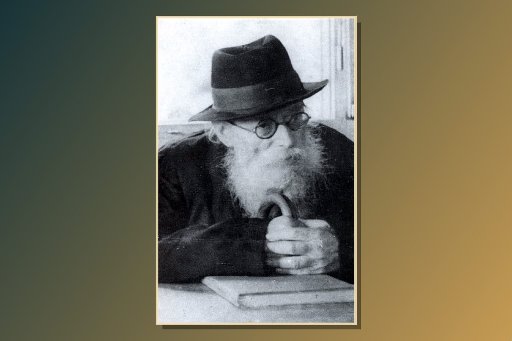
הרב אברהם ישעיה קרליץ, החזון אי"ש, נולד בעירה קוסובה שבליטא בשנת תרל"ט, ונפטר בארץ ישראל, ט"ו חשון תשי"ד. החזו"א היה מגדולי הרבנים בדורו והמנהיג החרדי הבולט ביותר בא"י בשנים תש"ח–תשי"ד. לאחר נישואיו התגורר בעירה כוידאן, כאשר הוא לומד תורה באין מפריע, ואשתו מפרנסת את משפחתם בעבודה בחנות אריגים אשר פתחה. בשנת תרע"א פרסם בעילום שם את הכרך הראשון בסדרת ספרי חזו"א, הספר הרשים מאוד את ר' חיים עוזר גרודזינסקי. החזו"א היה עניו וצנוע מאוד ולא רצה להתפרסם או לקבל משרה רבנית, הוא העדיף ללמוד כל חייו תורה לשמה ללא הפרעה. בשנת תרצ"ג עלה לארץ ישראל, ולאחר תקופה קצרה ביפו עבר לגור בבני ברק, שהפכה בזכותו למרכז של תורה.
אחת מפעולותיו הראשונות בארץ, היתה הדאגה לשמירה מעולה של המצוות התלויות בארץ. ובזה השקיע הרבה מאוד, ודרש מקיבוצי פא"י לשמור את שנת השמיטה ללא היתר מכירה, למרות המצוקות הכלכליות.
('כי עת לחננה' – ראובן פרידמן)
באיסרו חג של פסח, שנת תרצ"ג, קרא החזון איש אליו את תלמידו ר' שלמה כהן, ואמר לו שברצונו לגלות בפניו סוד כמוס. עשה ר' שלמה את אזניו כאפרכסת, והקשיב לדברי רבו: "בדעתי לעלות בקרוב לארץ ישראל ולהתיישב בה. לך נא אל רבי חיים עוזר, ובקש ממנו שיכתוב לירושלים לרבי משה בלוי, ראש אגודת ישראל, שידאג לשלוח סרטיפיקט — רישיון עלייה של ממשלת המנדט — עבורי ועבור זוגתי".
נדהם ר' שלמה וקפא תחתיו. האמנם חושב החזון איש לעקור מווילנא ולנטוש אותה לתמיד? ומה יאמר על כך רבי חיים עוזר? אך אימת רבו הייתה עליו, והוא לא שאל מאומה — הלך ישר לביתו של רבי חיים עוזר, וזה נתן לו על אתר את המכתב שביקש. רק למחרת, כשנפגשו שוב, סיפר רבי חיים עוזר לר' שלמה שהוא מתחרט על מעשהו: "היטב חרה לי שרבי אברהם ישעיהו חושב לעזוב את וילנא" — וניסה בכל דרך להניא את החזון איש מתוכניתו, אך ללא הועיל.
במוצאי שבת קודש, ז' בתמוז תרצ"ג, עזב החזון איש את וילנא בדרכו לארץ חמדה. כעשר שעות נסיעה ברכבת הביאוהו לוורשה, ומשם המשיך לעיר הנמל הרומנית קונסטנצה, שם עלה עם זוגתו — כשהם נושאים במו ידיהם את צרורות חפציהם הדלים — על סיפון אוניית הקיטור "פולוניה", בדרך ישירה לארץ ישראל.
את רוב שעות היום בלה על הסיפון, חופת שלווה נפלאה עוטה את פניו, ובידו ספרו הפתוח — השולחן ערוך, ה"יועץ האישי" שלו, שבו נהג להיוועץ לפני כל צעד. גם לפני נסיעה זו שאל בעצתו, ונענה: "מצוות ארץ ישראל הוכרעה על ידי הרמב"ם והרמב"ן ושאר פוסקים" — נימוק מכריע. ועוד הוסיף: "וידוע עד כמה שאף החפץ חיים זללה"ה חפץ היה לעלות" (עיין הערה). גם החפץ חיים נמנה, אפוא, על יועציו — שהרי לגביו היה השולחן ערוך "חי" ממש.
עומד היה ליד מעקה הסיפון, עיניו נשואות מזרחה, לשם התקדמה האונייה. "כן, בנתיב ים זה עבר גם הגר"א, מורי ורבי הרוחני", הרהר לעצמו. "ממש בין גלים אלה שט הוא, בדרכו לחוף ארצו הנכספת — אך מן השמים עיכבוהו, ולא זכה להגיע". הגר"א ראה בעלייה לארץ חובת גברא, ולא נרתע משום קושי, אך לא עלתה בידו. "אף הוא יעשה כמוהו", גמר החזון איש בליבו. "לא יתחשב בקשיים כלשהם — ערבים וחביבים יהיו עליו היסורים שארץ ישראל נקנית בהם, ובלבד שיזכה לעלות".
תקוות רבות תלה בעלייתו לציון. ארץ הקודש נבנתה אז בקצב מזורז — בבניין הגשמי הדברים אמורים, אך בבניינה הרוחני, חש, טרם החל המפעל האמיתי. וזו, כפי שנראה בהמשך הפרק, הפכה למשימת חייו.
חום כבד שרר בירושלים ביום שני בשבת, ט"ו בתמוז תרצ"ג. רוחות מדבר יבשות וצורבות ייבשו כל טיפת לחלוחית. אף על פי כן יצאו פרנסי אגודת ישראל, ובראשם ר' משה פרוש, לרדת ליפו ולקבל את פני החזון איש, שספינתו עמדה להגיע אל החוף.
חברי המשלחת הבחינו מרחוק בדמותו של יהודי מהורהר בגיל העמידה, יורד בסולם האונייה, והקיפוהו בחצי גורן עגולה. הוא צהל לקראתם בחדווה גלויה, בלא שיוכל להסתיר את אושרו הפנימי. רגליו רעדו קמעה מרוב התרגשות, כאילו לחש לו קול פנימי: "של נעליך מעל רגליך, כי המקום אשר אתה עומד עליו אדמת קודש הוא". ולא בכדי — על אותו רציף עתיק בנמל יפו דרכו לראשונה גם תלמידי הגר"א מווילנא, שעלו והתיישבו בארץ מאה ושלושים שנה קודם לכן, בציוויו של רבם. עתה צעד החזון איש, ללא דעת, בעקבותיהם ממש.
סבר של שביעות רצון ואושר שפוך היה על פניו — אושרו של ילד השב אל חיק אמו לאחר פרידה ממושכת. חיוכו הביישני, המהול תמיד בקורט של רצינות, לא סר מעל פניו אף לרגע, גם בעודו עומד בתור למכס ולביקורת הדרכונים.
את ארץ ישראל אהב החזון איש בכל ליבו. השתוקק לראות את בני ציון, המצוינים בהלכה ובדרכה של תורה, מתיישבים בה ונוטעים בה את אוהלם — לראות בהחייאת שממותיה ובשיבתה לתפארתה. אך אצלו, גם ברגש העמוק הזה, שלט תמיד השיקול ההלכתי הטהור.
מכאן הסיק להלכה שאף לאחר שגלו ישראל וכבשוה אויביהם, נחשבת הארץ שייכת לישראל מכוח הבטחתו יתברך להשיבה אליהם. עיקרון זה לא נותר תיאורטי: כאשר התלקחה בשנים הבאות המלחמה בין היהודים לערבים, פנה אליו יהודי המתגורר במושבה שבחזית האש ושאל אם לעקור עם משפחתו למקום בטוח יותר. השיב לו החזון איש: "הגע בנפשך — אם כך ינהגו כל תושבי מקומך, יזוז הגבול פנימה, ושטח יישובנו ילך ויצטמצם".
וכן כל מי שנמלך בו מיהודי התפוצות אם להתיישב בארץ, עודדו וחיזקו: "ארץ ישראל נקנית ביסורים ובהרבה סבלנות", אמר לאחד מרבני אשכנז שביקש את ברכתו עם עלייתו ארצה. ולרב אחר, שסייר בארץ הקודש לאורכה ולרוחבה, לא היסס לשאול בחיוך: "ומה דעתך — האם לא צדקו יהושע וכלב?", ברמזו לדברי המרגלים "טובה הארץ מאוד מאוד".
לצד פסיקותיו ומעשיו, נותרו מכמה מפגשים מאמרים קצרים וחדים שבהם ניכרת בבירור מידת חיבתו לארץ — ואי-הבנתו הפשוטה, כמעט תמימה, כיצד יכול יהודי שלא לחבבה.
שאלה: מותר לצאת מארץ ישראל?
אחד מצעירי התיירים מארצות הברית ביקר את החזון איש. ידוע היה שהחזון איש מעודד גם תיור בארץ, וכתב באחת מאיגרותיו: "התיור בארצנו כשהוא לעצמו איננו משום חשש איבוד ממון" (איגרות חזון איש, א, קעו) (עיין הערה). אך כשהציג לתייר הצעיר את השאלה "האם באת להשתקע בארץ?" והתשובה הייתה שלילית, שאל אותו החזון איש: "האם מותר לצאת מארץ ישראל?" האורח, מבולבל, השיב: "שמעתי שאם באים ארצה בכוונה מראש שלא להשתקע בה, מותר לעזוב אותה!"
ענה לו החזון איש בנימה של אכזבה גדולה: "תמה, תמה. אתה טורח למצוא דרך איך לעזוב את הארץ, בעת שאנו כולנו מתאמצים דווקא למצוא דרכים איך לעלות ארצה!"
בפעם אחרת באו אליו בחורי ישיבה שעלו מן הגולה, ושאלו מה דינם בעניין שמירת יום טוב שני של גלויות, מאחר שבדעתם לחזור לחו"ל. השיב להם מיניה וביה: "וכי זוהי דעה בכלל? איזה יהודי יש בדעתו לחזור מן הארץ?" (פאר הדור, עמ' מב).
ופעם ניגש אליו אדם שהיה אחראי על בת ישראל מצפון אירופה, ואמר לו שלדעתו אין בארץ ישראל די בחורים מתאימים בשבילה, ואולי כדאי לשלחה לאמריקה. חייך החזון איש ואמר: "מה צריך שיהיו 'הרבה' בחורים מתאימים..."
(ר' דב יפה, "לעבדך באמת")
הגאב"ד קוממיות, רבי ברוך מנדלזון זצ"ל, סיפר בהספדו בכולל חזון איש כי אמנם רבים סברו שגזירת גיוס הבנות היא שפגעה אנושות בבריאותו של החזון איש עד שנסתלק לבית עולמו, אך העומק האמיתי היה עמוק מזה: עיקר צערו נבע מן החשש שמא ייאלץ לפסוק שבעקבות הגזרה בטלה מצוות יישוב ארץ ישראל בזמן הזה. עד כדי כך הייתה מצוות הארץ שקולה בעיניו כנגד גופו ובריאותו.
באחד מטיוליו סביב בני ברק, אשר הרבה בהם מהיותם הכרחיים לבריאותו, אמר מרן זצ"ל: "הם מתיימרים להיות חובבי ציון, ואומרים עלינו שאין לנו חיבה לארץ ישראל והבנה ליישובה". ופתח וסיפר:
"בזכרוני עיירה קטנה, ליטאית, שבה נזונו בקושי כמה מאות משפחות יהודיות. שלושה רובל בשבוע הספיקו — בצמצום — למשפחה יהודית שלמה. והנה בא משולח לישיבה, הלהיב את הלבבות, דרש ונאם, הלך מבית לבית — ולכשהצליח, אסף שמונה רובל. ואם היה מן המעולים שבמקצועו, שכר פעולתו המאומצת של כמה ימים היה כ-15 רובל, אם הלך בגדולות.
"והנה בא לעיירה משולח לעניי ארץ ישראל, מקופת רבי מאיר בעל הנס שהתקין ר' חיים מוולוז'ין. לא היה עליו להלהיב לבבות או לעורר לנדבות — מלאכתו נעשית מאליה. הלך מבית לבית, ועליו רק לצבור את הפרוטות. והסכום היוצא מעיירה זו היה מדי שנה 300 רובל. אם נתרגם זאת לימינו — נאספו אז, בעיירות קטנות ופינות נדחות, מיליוני לירות לטובת ארץ ישראל, ומהן נוסד היישוב ונבנה. — והם עוד מתיימרים לומר עלינו שאין לנו חיבה לארץ ישראל..."
"והיאך ייתכן אחרת?" המשיך החזון איש. "האם זה אפשרי, שיהודי שומר תורה לא יהיה חובב הארץ? הלא מוטבע דבר זה בחינוכו של הילד, עד שאין למחוק את הרשמים הנחרתים כבצפורן ברזל על לוח ליבו". והביא דוגמה מפורשת מלימוד החומש: הילד לומד על בחיר האומה, משה רבנו, ועל שנותיו האחרונות — והנה משה, העומד לפני פטירתו כששערי גן עדן פתוחים לפניו, משתוקק דווקא לדבר אחד:
"איזה רושם כביר על ערכה של הארץ סופג לתוכו הילד הלומד תורה זו — לא כאחרים, אלא בקדושה ובטהרה! הנה הוא רואה לפניו את משה רבנו, אשר ערכו וגדולתו לא ישוו לשום בשר ודם, משתוקק כל כולו על הארץ וקדושתה — ואיך לא יאהב הוא עצמו את ארץ ישראל?!" (פאר הדור, עמוד מ"ד).
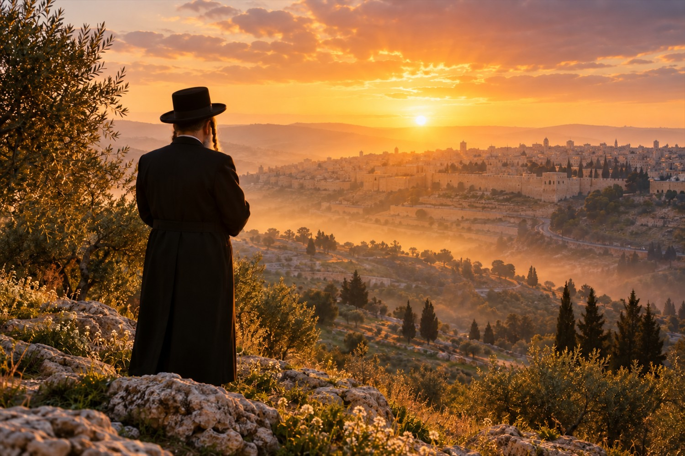
פעליו הנשגבים של הסבא קדישא הרה"ק בעל 'אהבת ישראל' מויז'ניץ זי"ע למען צדקת ארץ ישראל, עלו על כולנה. אהבה רבה אהב הרבי מויז'ניץ זי"ע את ארץ הקודש, כל ימי חייו שאף לעלות אליה ולחונן את עפרה. בשנת תרפ"א אף נתפרסם באר"י כי הסב"ק מויז'ניץ יגיע לביקור, אך מסיבות שונות לא יצאה התוכנית לפועל. בשנת תרצ"ה, בביקורם הראשון של בני הרבי זצ"ל בארץ ישראל, השתוקק מאוד ה'אהבת ישראל' להצטרף אליהם, אלא שמפאת מצב בריאותו לא הרשוהו בני ביתו ומקורביו לבצע את משאלתו. לימים, כשסיפר בנו כ"ק מרן אדמו"ר ה"אמרי חיים" זי"ע על הנסיעה ההיא, התבטא: "הוי, כמה קינא בנו אבינו הקדוש כשעלינו לארץ הקודש". ואכן, ה'אהבת ישראל' נסע כברת דרך ללוות את בנו כ"ק אדמו"ר זצ"ל, שנסע מגרוסוורדיין, וגם בשובם נסע לקראת בניו לקבל פניהם.
במקרה מסוים, כאשר שאלו יהודי האם לנסוע לארצנו הקדושה, השיב הרבי מויזניץ: "אילו היו לי כנפיים, הייתי עף לשם". בהזדמנות אחרת, כשנפרד ממנו יהודי לפני שעלה לארה"ק, אמר לו: "אולי יש לך מקום להכניסני בכיס בגדך?… העיקר שאסע גם-כן לארץ ישראל!" וכאשר שאלוהו פעם מדוע אינו נוסע לביקור, השיב: "לנסוע אפשר, ברם איך אפשר לצאת משם?!"...
פעם בא יהודי להיפרד לפני עלייתו לארץ ישראל. בעמדו ללכת, קם מרן ה'אהבת ישראל' זי"ע מכסאו, ליווהו עד הפתח, ואמר: "כתוב בספרים הקדושים שסגולה ללוות יהודי הנוסע לארץ ישראל. האמן לי, שהייתי חפץ מאוד ללוותך ולנסוע אתך עד ארץ ישראל, כי עז רצוני להיות שם, אולם בני משפחתי ומקורבי אינם נותנים לי, יען כי אין זה לפי כוחי; על-כן אלווה אותך לכל הפחות עד הדלת".
(תודות למכובדנו הרב חיים מאיר אוביץ על אדיבותו במסירת הסיפור)
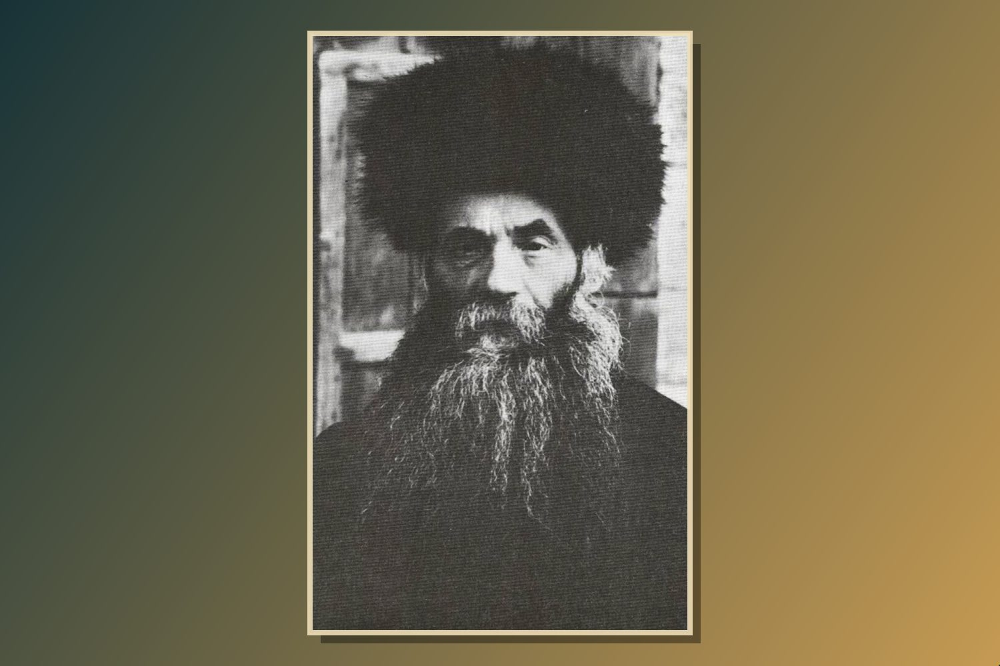
רבי איסר זלמן נולד בעיר מיר בשנת תר"ל (1870). את ראשית לימודו קיבל מפי רבי יום טוב ליפמן בעל "מלבושי יום טוב", ששימש כאב"ד במיר. לאחר מכן למד כשבע שנים בישיבת וולוז'ין, שם כאמור יצק מים על ידי רבי חיים הלוי שפתח לפניו שערי אורה והורהו יושר נתיבות הלימוד. שנה אחת היה בישיבת ראדין. מספר שנים כיהן כר"מ בישיבת סלבודקה.
בשנת תרנ"ד (1894) יסד ישיבה בעיר סלוצק, בה למדו מאות תלמידים שרבים מהם נודעו כגדולי הדור הבא, ושמה נודע בכל ליטא ורוסיה. בשנת תרס"ג (1903) החל לכהן כרבה של סלוצק (לאחר שרבה של סלוצק, רבי יעקב דוד, בעל פירוש הרידב"ז על הירושלמי ועוד, עלה לארץ ישראל). שם ישב עד עלותו לארץ ישראל בשנת תרפ"ה (1925). בשנה זו החל להנחיל ולהשריש את תורת רבו גם בארץ ישראל, זאת על ידי השמעת שעוריו בישיבה הגדולה "עץ חיים" בירושלים שבה כיהן כראש הישיבה מעת עלותו ארצה עד לפטירתו.
ר' איסר זלמן היה "אבן האזל — מורה דרך" לא רק בנתיבות ההעמקה והעיון, אלא היה לאלפי תלמידיו ולכל רואיו, מופת וסמל חי, ביראת השמיים הגדולה שניכרה מכל צעד ושעל שלו, בענוותנותו הגדולה, ובדקות הרגשותיו מכל פעולה או אמירה העשויה לפגוע "משהו שבמשהו" בזולת. נלב"ע י' כסלו תשי"ד.
בשנת תר"פ קיבל הגאון רבי איסר זלמן מלצר זצוק"ל, בעל 'אבן האזל', אגרת משארו הגאון רבי צבי פסח פרנק זצוק"ל, מירושלים, שבה הוא קורא לו לעלות לעיר הקדש, ולהעלות את ישיבתו עמו. ואלו חלק מדברי האגרת ששיגר אליו:
באחד הימים היותר מרים שבתקופת השואה, שוחחו מספר אנשים לאחר התפילה בבית הכנסת "ראנד" על אודות בשורות האיוב שהגיעו מאירופה היהודית, הדוויה, הפצועה והשסועה. משסיימו אותם אנשים את שיחתם, קרא רבנו לרבי יעקב קצנלבויגן ושאל אותו על אותן ידיעות שהגיעו.
לאחר מכן פנה אליו רבנו ואמר לו: "הנני רוצה לספר לך בזכותו של מי ניצלנו, אנכי, רעיתי, בני רבי צבי יהודה ובתי הרבנית שרה. באחד הימים בהם עוד התגוררתי בסלוצק, בא אלי בני ר' פייבל להיפרד ממני, הואיל והנני נוסע לארץ ישראל.
"לבשתי את המעיל ואת המגבעת, יצאתי ביחד אתו, וליוויתי אותו כברת דרך קצרה. לאחר שחזרתי הביתה, הרגשתי בנפשי מעין אי שקט וחוסר מנוחה. יצאתי מיד מן הבית והתחלתי לרוץ אחרי ר' פייבל. משהשגתי אותו אמרתי לו: הנני מבקש ממך שתדאג לכך שאעלה גם אנכי לא"י".
אכן משהגיע ר' פייבל לא"י, סיפר על שאיפתו זו של רבנו לרבי צבי פסח פרנק קרוב המשפחה, אשר התחיל אז לטפל בכך שרבנו יתמנה לראש ישיבת "עץ חיים" שבעיר הקודש.
בימי מלחמת העולם השנייה סיפר רבנו שבעת ביקורו אצל ה"חפץ חיים" בשנת תר"צ — שנים אחדות לפני פרוץ המלחמה — אמר לו הסבא קדישא: "הולכת וקרבה מלחמה שנייה אשר תבעיר את כל העולם. המלחמה הראשונה תהיה לעומתה כמשחק ילדים".
נזדעזע רבנו ושאל: ומה יהיה? השיב לו החפץ חיים בפסוק: "וְגַנּוֹתִי אֶל הָעִיר הַזֹּאת לְהוֹשִׁיעָהּ לְמַעֲנִי וּלְמַעַן דָּוִד עַבְדִּי" (ישעיהו לז, לה).
היה זה בימי מלחמת השחרור, הלגיון הערבי הפגיז את ירושלים ללא הרף, ובין הנפגעים היה אף רבנו שנפצע קשה באחת ההפגזות. יסוריו היו גדולים ביותר אולם הוא לא נאנח.
פעם בא לבקרו ליד מיטת חוליו רבי שלמה זלמן פרוש, ומשראה את סבלו ויסוריו של גדול הדור נמלטה מפיו אנחה. פנה אז אליו רבנו ואמר לו: "הנה בעז"ה בקרוב תתגשם נבואת הנביא (עובדיה א, יז): 'וּבְהַר צִיּוֹן תִּהְיֶה פְלֵיטָה וְהָיָה קֹדֶשׁ'".
מדוע דווקא הפסוק הזה?
והוסיף רבנו וסיפר: היה זה לפני מלחמת העולם השנייה. ישב פעם מרן ה"חפץ חיים" ולידו תלמידו הגדול רבי אלחנן וסרמן. נאנח ה"חפץ חיים" ואמר: "אני רואה עננים שחורים אשר מתקדרים על שמי אירופה, סכנה נוראה מרחפת על כלל ישראל". נחרד רבי אלחנן וסרמן ושאל: ומה יהיה? השיב לו ה"חפץ חיים": "ובהר ציון תהיה פליטה והיה קדש".
הוסיף רבי אלחנן ושאל: הרי שם בארץ ישראל מתגברים החילוניים, מורדי אור התורה? ענה לו בעל ה"חפץ חיים": "'והיה קדש' — הנביא כאן משתמש בוי"ו ההיפוך, על מנת להשמיענו שבסופו של דבר תהיה בארץ ישראל מהפיכה רוחנית לקדושה ולטהרה — 'ובהר ציון תהיה פליטה והיה קדש'".
(הדברים לוקטו מהספר "בדרך עץ החיים")
וכך נאמר בפסוק, ובו נרמז יסודה של אותה "מהפיכה רוחנית" שעליה דיבר החפץ חיים:
מבואר בפסוק שרק לאחר שהביא אותנו הקב"ה אל אדמתנו, ארץ ישראל, אז — מכוח קדושת הארץ — נטהר מעווננו.
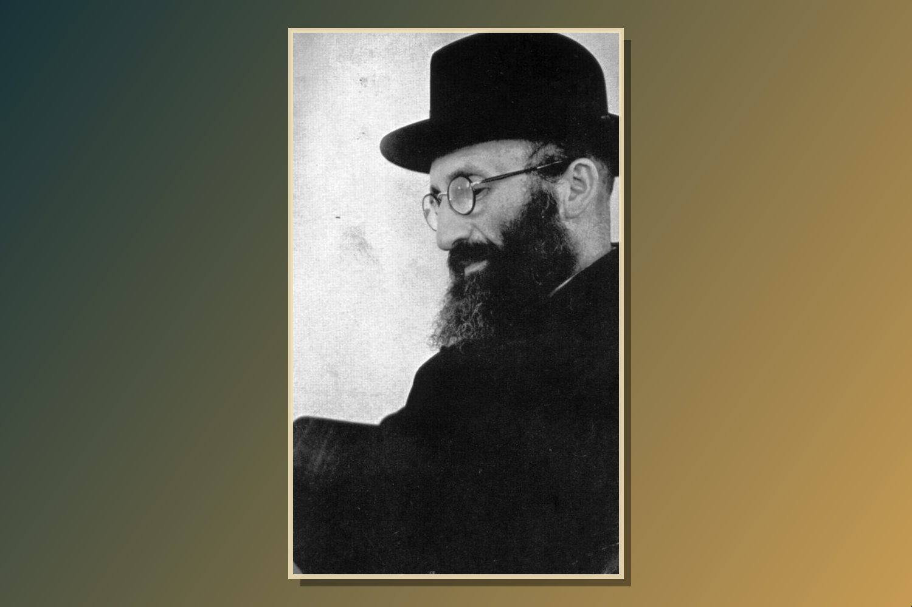
הרב אליהו אליעזר דסלר, המכונה גם ה'מכתב מאליהו' על שם ספריו, נולד בשנת תרנ"א בהומל (כיום בבלארוס), לרב ראובן דב דסלר, תלמידו המובהק של הרב שמחה זיסל זיו, "הסבא מקלם". הוא למד בישיבת קלם אצל הרב צבי הירש ברוידא, חתנו של "הסבא מקלם" במשך שמונה עשרה שנה. תקופה זו הותירה בו את חותמה, וכל חייו החשיב את עצמו כבן טיפוחיה של ישיבת קלם. נשא לאישה את בתו של הרב נחום זאב זיו, נכדתו של הסבא מקלם.
בשנת תרפ"ז נסע לאנגליה והתמנה כרב בבית הכנסת במזרח לונדון וגם כמנהל תלמוד תורה גדול עם ארבע מאות תלמידים. הוא התמסר בכל כוחו לתפקידו החדש בשדה החינוך, אבל עד מהרה נוכח לדעת שהתלמידים והוריהם רחוקים מדי מדרך התורה האמיתית. הוא עזב את המשרה הכבודה הזאת ובחר בתלמידים אחרים והתמסר כולו לחינוכם, שאכן עשו פרי ורובם גדלו לדרגות גדולות בתורה וברבות הימים נעשו למרביצי תורה באנגליה ובארץ ישראל.
תקופה חדשה בחייו מתחילה עם יסוד כולל אברכים בגייטסהד שבצפון אנגליה, שם השקיע עמל רב בשיחותיו המוסריות וכן באיסוף כספים בשביל הכולל — והכל בלי קבלת שכר, כי הוא עצמו התפרנס בדוחק משיעורים פרטיים. בשנת תש"ח הוזמן לשמש כמשגיח רוחני של ישיבת פוניבז' הגדולה בבני ברק, ישיבה בת מאות תלמידים. הוא הסכים בתנאי שיוכל להמשיך ולהיות בקשר עם תלמידיו שבאנגליה, וכך חילק את זמנו — חלק הארי בארץ הקודש ולפרקים נסע לאנגליה לחזק את תלמידיו. שיחות המוסר שנשא בישיבה ידועות גם היום בעולם הישיבות, והרבה מרעיונותיו נתכנסו בסדרת הספרים 'מכתב מאליהו'. נפטר בכ"ד טבת תשי"ד.
קשה למצוא אדם שהרגיש את השינוי עליו בארץ ישראל כמו הגרא"א דסלר זצ"ל. כשהגיע לארץ ישראל, דיבר בהתפעלות על רשמיו מארץ הקדש. לשאלת בן דודו הרב מאיר מונק, ממה הוא מתפעל, הרי לא ראה עדיין שום דבר וכל הזמן הוא שוהה בד' אמות של ישיבת פוניבז'? השיב: "וכי אשאב רשמים ממראה בתים או שדות? הלא במשך שעתיים אני משיג כאן ברוחניות דברים שעליהם הייתי צריך לעמול בחו"ל במשך שבועות שלמים".
כשהגיע לכהן כמשגיח בישיבת פוניבז', פתח את שיחתו הראשונה: "שלום עליכם אנשי ארץ ישראל, השבוע הגעתי לארץ. ארץ ישראל, ארץ הקדש, אדמת קדש, מקום קדוש, ואז עלה בדעתי לחשוב מהו המושג של מקום וזמן..." (מוסף שב"ק שלח שסח, וראה מכתב מאליהו ז' עמ' רפד).
מתוך מכתב שכתב לחתנו: "מה אומר לכם חביבי? אני מרגיש בחוש אמיתת דברי רבנו יהודה הלוי שאמר 'חיי נשמות אויר ארצך' — חיי נשמות ממש. ואם יש גם מקומות בארץ הקודש, אשר הרוחניות גנוזה היא שמה ולא תתגלה על נקל, אבל במקומות התורה, נראית כבחוש ממש. רחבת ידיים מאד מאד היא קדושת הארץ, מאשרת ומעגנת לבלי סוף. הלא מובן ממילא מצב רוחי והלך מחשבותי" (חלק ה, עמ' 519).
"אנו מרגישים בחוש כי 'והשבות אל לבבך' — השגת נקודת האמת שבלב, נקודת לשמה, שהיא עיקר עבודת המוסר — הרבה יותר קל להגיע אליה בארץ ישראל מאשר בחוץ לארץ, אף במקומות המסוגלים לכך ביותר מצד הסביבה [כמו למשל קעלם בשעתה או גייטסהד עכשיו]" (חלק ד, עמ' 129; חלק ו, עמ' צז). "הזוכה להתיישב בארץ ישראל, אם הוא אך אדם רוחני קצת, זוכה למדרגות גדולות, כי 'אוירא דא"י מחכים' היא מציאות רוחנית" (חלק ה, עמ' 329). "העוסק בתורה בארץ ישראל זוכה להשפעה מיוחדת. בעינינו רואים בחוש כיצד צעירים העוסקים בתורה מתפתחים בארץ ישראל, ומשיגים הרבה יותר מאשר משיגים בחינוך תורני בשאר הארצות" (חלק ג, עמ' 194).
"כמובן שאני מחבב מאד מאד את העלייה לארץ מפאת מצוות ישוב ארץ ישראל, ואפשר מאד כי בזכות מצווה זאת יזכנו השי"ת לגאולה שלמה מהירה על ידי משיחו משיח האמת" (חלק ו, עמ' שיד). ואף מי שאינו יכול לקבוע מגוריו בארץ הקודש — "ראוי מאד שיבוא לבקר את הארץ תמידים כסדרם, אולי איזה פעמים בשנה, הן למען התועלת הרוחנית של המבקר והן לתועלת המתבקרים" (חלק ו, עמ' רלא).
הימים בין חג השבועות לשבעה עשר בתמוז, בשנת תש"ב: גייסות הכובש הנאצי רומל ימ"ש איימו לכבוש את מצרים ואחריה את כל המזרח התיכון כולל ארץ ישראל. אנשי הכנופיות הפלשתינאים כבר הכינו קבלת פנים נלהבת ל"ידידים" הרוצחים הגרמנים. היטלר ימ"ש הכריז שהוא עומד להקים "כבשני אושוויץ" גם בארץ ישראל, ולשרוף בהם את כל 400 אלף היהודים שחיו בה. יהודי ארץ ישראל נכנסו לפחד נורא, וכל יישובי הארץ "זיעזעו" אותה בתפילות וזעקות.
בתאריך י"ט תמוז תש"ב (4 ביולי 1942) התקדם הצבא הנאצי עד למדבר "אל עלמיין" — קו ההגנה האחרון של הבריטים לפני הכניסה למצרים ולארץ ישראל, ופרץ קרב עז. היתה סכנה גדולה שכוחות השטן ינצחו, אלא שלפתע, מבלי שום סיבה נראית לעין, נכנעו הגרמנים! לאחר מכן הוברר הנס: הכוחות הגרמנים, שלא הורגלו להילחם בתנאי מדבר, הסתערו על צינורות המים של הבריטים בחום הלוהט — ואלה התבררו כמי ים מלוחים, שאינם ראויים לשתייה. החום המחניק והצמא שברו את רוחם ושמו קץ לקרב.
מי לא יראה ב"מקרה" זה נס מהשמים, יד האלוקים?! ("אמרי יחזקאל" — פניני המועדים, חלק ב, עמ' 197–199)
וכך היה מתבונן רבנו: כשמסתכלים בעולמם של האומות כולם, נראה שינוי נורא — בשואה באה שנאת יהודים גלויה בכל העולם מקצה, ובאותה שעה של מהומה ושערוריה, בתוך אותו ים השנאה, דווקא נולד ההיפך: שהם בעצמם יאמרו לבסס את ישראל באדמת הקודש. האם כך הוא מהלך העולם הטבעי? "ועוד כמה נסים ראינו? היתה ארץ ישראל כמו בצבת אחוזה... ופתאום ברגע האחרון של סגירת הצבת, והנה נהפך הגלגל משני הצדדים בקווקז ואל עלמיין. האם גם זה במקרה?" (חלק ג, עמ' 350).
הרב יחיאל מיכל טוקצינסקי (טיקוצ'ינסקי) נולד בליטא בט"ו בטבת תרל"ב, ובגיל שמונה עלה לארץ ישראל. היה ראש ומנהל ישיבת "עץ חיים", אבי ה"לוח לארץ ישראל" ומחברם של ספרים הלכתיים רבים. מתוך אהבתו העזה לארץ ישראל, נמנע מלצאת לחוץ לארץ מיום בואו אליה.
ספריו המפורסמים: לוח א"י — היה הראשון בארץ ישראל להוציא לאור לוח שנה המפרט את מנהגי הימים השונים. גשר החיים — ביקור חולים, קבורה ואבלות, בהלכה ובמחשבה. ארץ ישראל — על המצוות התלויות בארץ. עיר הקודש והמקדש — חמישה חלקים על כל הנושאים ההלכתיים הקשורים לירושלים ולבית המקדש. נפטר בח' בניסן תשט"ו.
הרב ניסן אהרן טוקצינסקי סיפר על אביו, הג"ר יחיאל מיכל: "מעשה שהיה ובקרו אצלו חכמי ורבני עץ חיים בדירתו שבעיר העתיקה. באמצע השיחה נפל עפר מהתקרה. שאל אחד מהמסובים: 'מדוע כבודו גר בדירה כזאת שעפר נופל מתקרתה?'. הרים אבא את העפר והסתכל עליו מתוך חיבה גדולה ואמר: 'על עפר זה דרכו אבותינו הקדושים... נביאנו חוזינו התנאים והאמוראים, כמה הליכות של קדושה ספג העפר, הרי זה קדוש וטהור'. הוא לקח את העפר, נשקו והניחו בפינה. הרגש הזה הרגיש על אף הליכתו יום יום על האדמה" (עיר הקודש והמקדש, חלק א, עמ' 17).
נביא כמה דברים נפלאים מהספר "ארץ ישראל" להגרי"מ טוקצינסקי, סימן כ"ז — קשר ישראל לארץ ישראל (בקיצור נמרץ):
אין לדמות את מהות קשר עם ישראל לארצו למהות קשר של כל עם אחר לארצו: אין לשום עם שטר קדום ולא כל הבטחה מוקדמת למדינתם — יחוסם הוא רק יחוס ארצי, בלא שום יחס נפשי וללא כל ערכי קדושה. לא כן האומה הישראלית ביחוסה לארץ ישראל, שיש לה שטר קדום הכתוב בכמה מקראות ב"ספר הספרים" המקודש. וקדושתה קדושת עולם היא — ולהיותה קדושה קדושת עולם, לכן התאוו אבות העולם להתגורר בתוכה עוד בטרם היתה לנחלת ישראל.
ומה עזה היתה אהבת גדולי ישראל, קדמאי ובתראי, לארץ ישראל, שבערה בתוכם כאש שלהבת קודש אשר מים רבים לא יכבוה ונהרות לא ישטפוה: ר' זירא, שכל כך נתאווה לארץ ישראל ולתורתה, "יתב במאה תעניתי דאישתכח גמרא בבלאה מיניה" כדי שילמד מר' יוחנן ועוד תורה שבארץ ישראל (בבא מציעא פה.). וידוע הסיפור על ר' יהודה הלוי בעל הכוזרי, שכשבא לארץ ישראל וניגש לשער ירושלים וראה חורבנה, התפלש על העפר ונשקה ובכה תמרורים, ואז חיבר את הקינה "ציון הלא תשאלי לשלום אסיריך".
ומעולם לא הזניח עם ישראל את ארץ ישראל: במסירות נפש ממש עלו העולים הראשונים להתיישב באחת מארבע הערים "צפת טבריא ירושלים וחברון", נסעו על ספינות שהנסיעה בהן ארכה כשנה, ומיפו לירושלים נסעו על חמורים סוסים וגמלים במשך יום ולילה, בפחד משודדים. בכמה מסירות נפש הקימו שבעה בני ישיבה את שכונת נחלת שבעה במערבה של ירושלים, במקום חיתו טרף ושודדים שורצים, ואחריה שכונת מאה שערים, ואחריהן העוז והגבורה להקים את המושבה הראשונה פתח תקווה במדבר ציה ושממה.
ומה חסר כיום, לעומת הדורות הקודמים?
"אותה התשוקה העזה שיקדה בלבות שלומי אמוני ישראל הקודמים שבחו"ל. אילו היתה הנסיעה והכניסה לארץ ישראל כל כך קלה לפני מאה שנה כפי שהיא כיום — כי עתה היתה ארץ ישראל מיושבת רובה ככולה שומרי תורה ומצוה... אך הם עצמם עוד חובבים את הישוב הגלותי, ומהם שדומה עליהם ששם ביתם גם לעתיד..." (עיר הקודש והמקדש, חלק א, עמ' י, בקיצור)
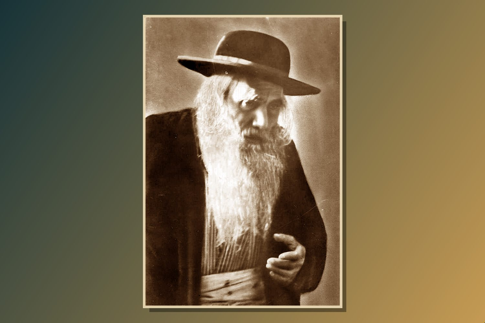
כך מסופר על הגרי"ח זוננפלד זצ"ל: כמה פחד ורחב לבבו למראה ארץ ישראל ההולכת ונבנית, מושבות חדשות מוקמות במקומות שונים, שדות שוממות מוריקות מלא העין, ויעוד הנביא יחזקאל: "וְאַתֶּם הָרֵי יִשְׂרָאֵל עַנְפְּכֶם תִּתֵּנוּ וּפֶרְיְכֶם תִּשְׂאוּ לְעַמִּי יִשְׂרָאֵל", הולך ומתגשם לנגד עינינו — והלא כבר נאמר כי בהתגשמותה של נבואה זו "אין לך קץ מגולה מזה".
על עלייתם של הגאון רבי אברהם שאג, ותלמידו הגאון רבי יוסף חיים זוננפלד זצוק"ל, בשנת תרל"ג מסופר: בצאתם את העיר יפו נכנסה העגלה אל שביל שמשני צדיו נטועים היו פרדסי יפו המפורסמים, וריח של תפוחים הגיע לנחיריהם. באותה שעה מלמל הגאון רבי אברהם שאג: "עתה מומחשים לי ביתר שאת דברי הפסוק: 'כְּרֵיחַ שָׂדֶה אֲשֶׁר בֵּרְכוֹ ה''. וכי זכיתי מעולם לריח כזה של 'חקל תפוחין קדישין', כפי שאני זוכה עתה? הלא זהו מעין עולם הבא, ממש מעין עולם הבא, גן עדן עלי אדמות"...
ומכיוון שהשתיקה הופרה, ענה התלמיד לעומתו: "נו, הלא זהו מה ששנינו בסנהדרין: כשתתן ארץ ישראל פריה בעין יפה אז יקרב הקץ, ואין לך קץ מגולה יותר". באותה שעה נענה רבו והפטיר אחריו לאות הסכמה: "יפה אמרת חיים בני, אין בכך כל ספק, הקץ מתקרב, יש לזרז את הסוסים שיגיעו מהרה לירושלים שמא יבוא המשיח ואנחנו משתהים בדרך..."
באותה שעה אחזתם רוח קדושה של כיסופי גאולה, ועיניהם לא תשבענה מנופה של ארץ ישראל. (האיש על החומה, א, 130)
מסופר עוד על הגרי"ח זוננפלד זצ"ל, שהלך בכל יום עוד ארבע אמות שלא הלך בהם מעולם — פעם לצד מזרח, עד שהרחיק, וחזר והלך לצד מערב. גם הגרב"צ ידלר זצ"ל מספר בספרו 'בטוב ירושלים': "אוהב ישראל וארץ ישראל בכל מאודו היה הגרי"ח זוננפלד, והוא לקח חלק פעיל בנסיעת הרבנים שסידרתי בשנת תרע"ד להתעוררות תשובה במושבים ובקיבוצים. זכורני שבעת נסיעת הרבנים היה יורד מזמן לזמן מהעגלה והולך רגלי, בעוד ששאר הרבנים המשיכו לנסוע, ונימוקו עמו, שהליכה ברגליו על אדמת הקודש חביבה עליו". הרי לנו שהגרי"ח זצ"ל החשיב את ההליכה בארץ הקודש כחיבוב מצווה. (הרב שמואל ברוך גנוט, נקודה למחשבה, יתד נאמן אב תשע"ט)
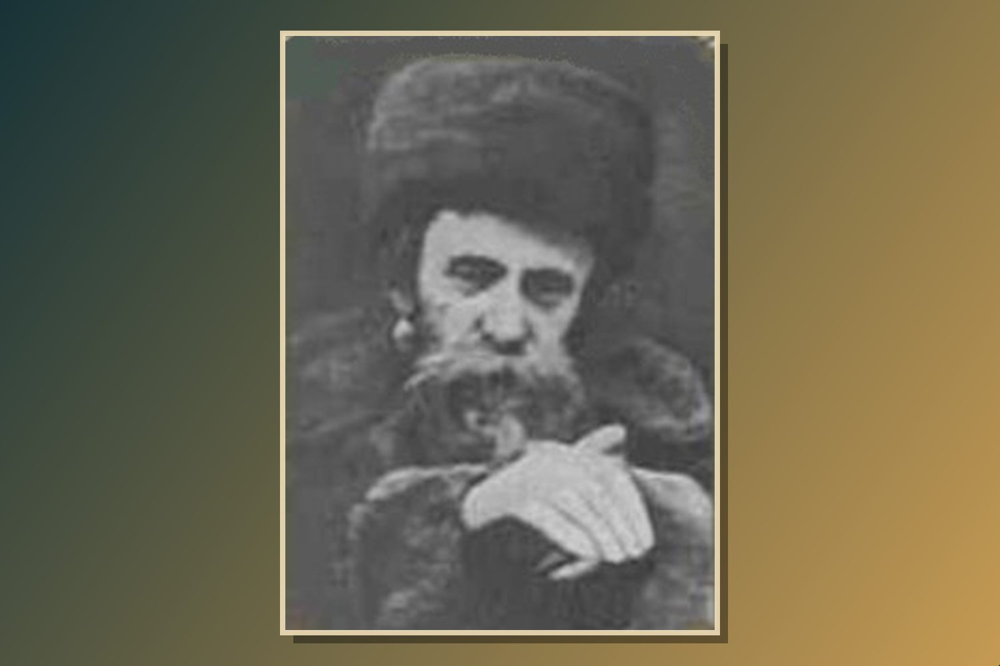
רבי אהרון רוקח מבעלזא נולד בבעלזא שבגליציה בשנת תר"מ לאביו רבי יששכר דוב. נודע מצעירותו בגאונותו, קדושתו וטהרתו. בגיל צעיר התייתם מאמו וגדל בבית סבו האדמו"ר רבי יהושע. עם פטירת אביו בשנת תרפ"ז הוכתר לאב"ד ואדמו"ר בבעלז. בשנות השואה איבד את רעייתו ואת שמונת ילדיו. הוא עצמו ניצל והגיע לארץ ישראל בשנת תש"ד, והקים מחדש את חצר בעלז בעיר תל אביב. נפטר בכ"א באב תשי"ז ונטמן בירושלים.
עזה היתה חיבתו של האדמו"ר הקדוש מוהר"א מבעלזא זי"ע לארץ הקודש, טרם בואו, ומשנה אהבה אהב אותה בהיאחזו בה. עוד בעודו בחוץ לארץ, כאשר הגיע אליו אדם שהתכונן לעלות לארץ ישראל, ליווהו מרן עד פתח היציאה. מעולם לא יעץ לצאת מארץ ישראל לחוץ לארץ. רבים היו שביקשו לרדת מן הארץ בזמן המלחמה, וכן רבים היו מחוסרי פרנסה, ובאו למרן כדי לבקש את הסכמתו — אך אף פעם לא השיב להם בחיוב. כשהגיעו יהודים מתפוצות הגולה ושאלוהו אם להתיישב בארץ ישראל, עודדם לעלות ולהתנחל בה. וכן כאשר שאלוהו אם להגר לארה"ב או לארץ ישראל, אמר תמיד להגר דווקא לארץ ישראל.
כשהגיע לארץ ישראל, ערך את שולחנו הטהור בירושלים בבתי וורשא, ובחוץ מסביב לבית המדרש הצטופף קהל גדול שלא יכול היה להיכנס. כשיצא משם היה קשה לפלס לפניו את הדרך, ולכן חשבו להוציאו על כסא, נישא על ידי משמשיו — ברם הוא סירב, ואמר שרוצה ללכת ברגליו כדי לקיים הליכה בארץ ישראל כפי שאמרו חז"ל. ('בקדושתו של אהרן', א, עמ' תכו)
כשהגיע לארץ הקודש, אחזתו רוח קדושה של כיסופי גאולה, ועיניו לא שבעו מהביט בנופה של הארץ. בכל עת היה מזכיר את דברי הגמרא (סנהדרין צח, א): "אמר רבי אבא: אין לך קץ מגולה מזה שנאמר: ואתם הרי ישראל ענפיכם תתנו ופריכם תשאו לעמי ישראל". ופירש רש"י: "כשתתן ארץ ישראל פריה בעין יפה, אז יקרב הקץ, ואין לך קץ מגולה מזה". (אדמורי בעלזא, "ומביא גואל", עמ' 83)
ר' אהרון מבעלזא היה חי כמו מלאך; כל ערב היו מגרדים לו תפוח עץ, ואת זה היה אוכל. פעם אחת הגיע חסיד מחו"ל והביא איתו תפוחים מחו"ל, בעלי מראה וטעם מיוחדים, ורצה לגרום הנאה לרבו. שאל אותו ר' אהרון: "זה תפוחי ארץ ישראל?" נכשל החסיד בלשונו ואמר: "תפוחי ארץ ישראל הם קטנים, הם חמוצים, הם לא טובים". נזדעזע רבי אהרון ואמר לו: "לך ליטול ידיים שלוש פעמים ואחר כך תחזור". כשחזר, אמר לו: "תגיד איתי שלוש פעמים: תפוחי ארץ ישראל טעימים מאוד, תפוחי ארץ ישראל יפים מאוד, תפוחי ארץ ישראל גדולים מאוד".
כששאלו אותו: "האם ירושלים מוצאת יותר חן בעיניו מהעיר חיפה?" השיב הרבי הקדוש: "חלילה! כל מקום הוא טוב מאוד, ירושלים בגלוי וחיפה בהסתר". ופעם, כאשר אחד האדמורי"ם התאונן על החום הגדול ששרר בביתו, השיב מרן זי"ע במתק לשונו: "אל תגידו כך, צריכים זאת בגלל הפירות". וכאשר יצא אותו אדמו"ר, אמר: "אסור לדבר על ארץ ישראל — המרגלים דיברו על ארץ ישראל".
כשעלה האדמו"ר ארצה והשתקע בתל אביב, ביקש שישתלו גינה בחצר ביתו שברחוב אחד העם וירכשו את כל הכלים הנחוצים למלאכת העידור, הניכוש וההשקיה. היו מחסידיו שתמהו לפשר הבקשה המשונה, שהרי בבעלזא לא גידלו צמחים (עיין הערה). ברם משהגיעה שנת השמיטה והאדמו"ר ביקש מעובדי הגינה שיגנזו את כל הכלים והזהירם לבל יעשו שום פעולה הגובלת באיסור, הבינו כי כל מגמתו בשתילת הגינה לא היתה אלא כדי לקיים את מצוות השמיטה בהידור. (במחיצתם, חלק ב)
ידוע שבשמים אין נחשבים ימיו ושנותיו של אדם, כי אם הימים שבהם עבד את הבורא יתברך שמו; ואילו הזמנים שעסק בהם לצרכי גופו אינם נחשבים לחלק מימי חייו. אך כל זה בסתם איש ישראל, אבל איש ישראל המקיים מאמר הכתוב "בכל דרכיך דעהו" ועובד ה' יתברך גם בעת עסקו בענייני הגוף — אזי גם הזמנים שעסק בהם לצרכי העולם הזה נכללים במניין ימיו.
מהו "כימי השמים על הארץ"?
גם מי שיושב בארץ ישראל ומקיים בכל רגע ורגע מצוות עשה של יישוב ארץ ישראל, הרי כל ימיו ושנותיו הם בשלמות. וזו כוונת הכתוב "למען ירבו ימיכם... על האדמה" — כאשר תשבו בארץ ישראל תהיה לכם אריכות ימים ושנים טובות, שכן כל ימיכם יהיו בשלמות, ולא רק הזמנים שבהם עסקתם בתורה ובתפילה, אלא גם השעות והימים שעסקתם בצרכי הגוף ייכללו במניין ימיכם, שכן בכל רגע עסקתם במצוות ישוב ארץ ישראל. וזהו "כימי השמים על הארץ" — אופן חישוב הימים והשנים בשמים יהיה כאופן חישוב הימים על הארץ, כמו שנאמר על אברהם אבינו "ואברהם זקן בא בימים", שהיה זקן בעולם הזה ובא לעולם הבא עם כל ימיו בשלמות, משום שעבד בהם את הבורא יתברך שמו. (במחיצתם, חלק ב)
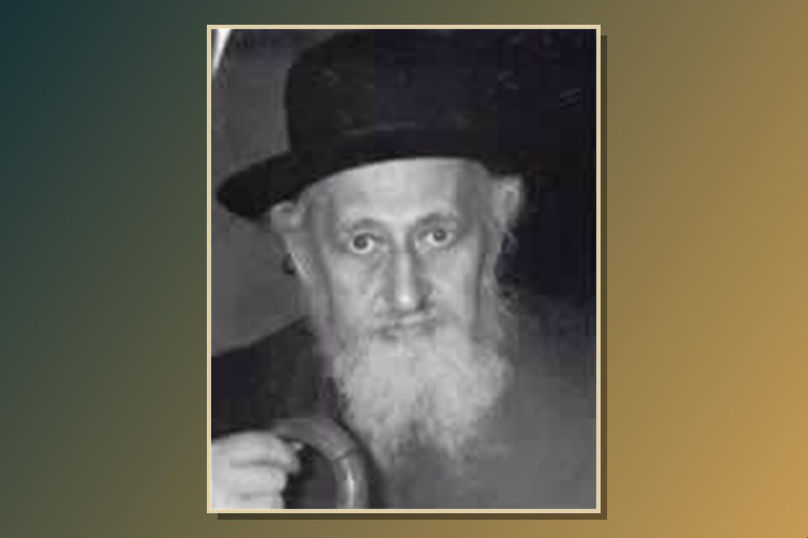
רבי יצחק זאב הלוי סולוביצ'יק (ידוע בשם 'הגרי"ז', או 'הרב מבריסק') נולד לאביו רבי חיים בשנת תרמ"ו (1886), בעת שזה שימש כראש ישיבה בוולוז'ין. מגיל צעיר הוכר כעילוי. בשנת תרנ"ב (1892), כשנסגרה ישיבת וולוז'ין, עבר עם אביו לבריסק, ושם למד ולימד. לאחר פטירת אביו בשנת תרע"ח (1918) מונה למלא את מקומו כרבה של בריסק.
בתקופת השואה הצליח לברוח עם כמה מילדיו, וכשהגיע לירושלים בשנת תש"א (1941) יסד בה את בית המדרש 'בריסק', בו עוסקים במיוחד בלימוד מסכתות מסדר קדשים. הוא היה לאחד ממנהיגי הציבור החרדי לצד ה'חזון איש', והתנגד באופן נמרץ לציונות. רבים מגדולי דורנו נחשבים כתלמידיו, ביניהם הרב אלעזר מנחם מן שך ראש ישיבת פוניבז', הרב משה שמואל שפירא ראש ישיבת באר יעקב, הרב משה שטרנבוך ראב"ד העדה החרדית בירושלים ועוד. הגרי"ז נודע בהקפדתו היתרה בדקדוקי מצוות, והוא העביר את ההנהגה הזאת לתלמידיו. נלב"ע ט' תשרי תש"כ.
מסירות נפש של ממש, מסר רבינו הגרי"ז מבריסק זצ"ל בשביל לזכות להיות בארץ ישראל. רבינו היה בווילנא בפרוץ השואה, כאשר היא עדיין היתה עצמאית, לכולם היה ברור כי וילנא לא תישאר לפליטה לאורך זמן. לרבנים וראשי הישיבות נשלחו ויזות, שבעזרתן יכלו להגר לארץ ישראל או לאמריקה. חלק מהרבנים החליטו לנסוע לאמריקה, שכן ארצות הברית רחוקה מאוד מחזית המלחמה, בעוד שארץ ישראל לא היתה מקום בטוח כלל בפני גייסותיו של הצורר הנאצי, שכבר עמדו בשערי מצרים.
מרן זצ"ל, כמו גם ראש ישיבת מיר רבי אליעזר יהודה פינקל זצ"ל וראש הישיבה דסלונים רבי שבתי יגל זצ"ל, החליטו למרות כל הסכנה לעלות רק לארץ ישראל. ההחלטה מקבלת משנה משמעות, בהתחשב בעובדה שעוד קודם שהשיג סרטיפיקאט לארץ ישראל, כבר נשלחו לו בדואר על ידי שארי בשרו שבאמריקה אישורי הגירה לאמריקה, כולל כרטיסי נסיעה לו ולכל ילדיו השוהים עמו בווילנא. אך רבינו סבר שהמקום בו ניתן לחנך ילדים ליראת שמים כראוי, הוא רק בארץ ישראל (עיין הערה).
ואף על פי כן, עדיין הלב היה נוקף לנוכח ההחלטה הגורלית, בעוד שלא היה זה רחוק מן המציאות שבסופו של דבר תתברר טרחתם במסע הארוך כנפילה מן הפח אל הפחת, כאשר אף על הארץ ריחפה סכנה מפני כיבושה בידי צבאות גרמניה. מרן זצ"ל הטיל אז את גורל הגר"א, והפסוק שעלה בגורל היה בתהלים (קד, ח): "יַעֲלוּ הָרִים יֵרְדוּ בְקָעוֹת אֶל מְקוֹם זֶה יָסַדְתָּ לָהֶם". או אז ידע לבטח כי עליו לרכז את כל מאמציו לקום ולעלות אל המקום שיסד הקב"ה לעם ישראל — ארץ הקודש. מאוחר יותר, בעודם עושים את דרכם ארצה בין הרי טורקיה ולבנון, אמר מרן זצ"ל כי כעת מבין הוא אף את הרישא של אותו פסוק — "יעלו הרים ירדו בקעות". (הרב מבריסק)
אדם מן השוק יכול לשאול: היה ר' יצחק זאב מבריסק חובב ציון? אם חיבת ציון פירושה — ישיבת הארץ והשתקעות בה, חינון עפרה ורציית אבניה, נשיאה בעול היישוב בימי מצור ומצוקה, התקשרות לעיר הקודש ירושלים אפילו כשצר ואויב עמד בשעריה, ודחייה בשתי ידיים של כל הצעה ליציאה לחוץ לארץ — הרי חיבה זו מצאה את גישומה המלא דווקא באיש ההלכה ש"התנגד" למדינה ופירש ממנה.
מעשה שהיה כך היה: בתו הבכירה וחתנו באו לארצות הברית, וחיו שם חיי כבוד ורווחה. הגרי"ז פקד עליהם לשוב ארצה ישראל. כשהתמהמהו, חרה אפו בהם והפסיק את חליפת המכתבים עמהם, ולא נתרצה להם, עד ששבו ארצה ישראל.
אחד מהרבנים בחוץ לארץ הגיע לארץ ישראל כדי להשתתף בכנסייה הגדולה של אגודת ישראל שהתקיימה בשנת תשי"ד בירושלים, ונכנס לבקר אצל הרב מבריסק. עשרים שנה עברו מנישואיו של אותו רב ועדיין לא היו לו ילדים. אמר לו הרב מבריסק: "ארץ ישראל הלא אינה נכנסת בחשבון, כי כך כתוב אצל אברהם אבינו. אם כך, אתה צריך להישאר בארץ ישראל ותיוושע" (עיין הערה).
ברם לאותו רב היו חשבונות שונים, ולא יכול היה להישאר סתם בארץ. לפני שעמד לחזור למקומו, נכנס שוב לרב מבריסק כדי ליטול ברכת פרידה, ואזי חזר הרב לשיחתו הקודמת: "אתה עוזב? הלא דיברנו שארץ ישראל היא סגולה, מתחיל חשבון חדש — ואולי תזכה לבן?" גם הרבנית היתה באותו ביקור. כששמעה את דבריו, הודיעה לבעלה שאינה נוסעת, ולבסוף באמת לא נסעו. הם התיישבו בתל אביב, וכעבור שנה, ממש "כעת חיה", אכן ילדה בן! (שאל אביך ויגדך, חלק ב, עמ' נ"ה)
במשך כמה שנים טובות המתינו הרב א. ורעייתו לבשורה הטובה, שבוששה מלבוא. כבר כעשור חלף מאז נישואיהם, וביתם היפה בציריך שבשווייץ עדיין ריק מקול תינוק. נמנו וגמרו בני הזוג לשאול בעצת גדולי ישראל. העצה שקיבלו הפתיעה, אך נתנה להם הרבה כוחות: "תעלו לארץ ישראל, זוהי ארץ מבורכת, מקום בו השם הטוב פותח את אוצרותיו. הן כך אמרו חז"ל ביבמות (ס"ד) כי פעמים שדווקא ארץ הקודש יכולה להביא בכנפיה את הבשורה המיוחלת!".
כשנודע כי בני הזוג עוזבים את ציריך ועולים לארץ, לא היתה גבה שלא הורמה בתמיהה. אך הרב א. ורעייתו נצרו את הסוד בלבם, ולא גילו לאיש את הסיבה האמיתית — רק לחברותא שלו, ידיד אמת רבות בשנים, גילה הרב א. את דבר העצה. תמה הידיד ואמר, בין דאגה לחוסר אמון: "אם תזכו להיפקד, אם יעזרכם השם וארץ ישראל תמלא את ביתכם בילדים משתובבים — אני סוגר מיד את כל עסקיי כאן, ובא בעקבותיך להשתקע בארץ ישראל!"
הבית נמכר, הריהוט חולק, החפצים האישיים נארזו, ובני הזוג עלו לארץ והשתקעו בירושלים. היה זה בחורף קר וגשום, בעיצומו של חודש שבט תשס"ה. בני הזוג כבר התגוררו בארץ תקופת מה, והנה תאומים — בן ובת — הפכו את הרב א. ורעייתו, לראשונה בחייהם, לזוג הורים מאושרים. "אני לא אבא של ארץ ישראל", אמר הרב א. בחיוך, "אני אבא בזכות ארץ ישראל (עיין הערה). זה המקום היחיד בעולם, בו קדושתו של המקום והאווירה הטהורה השוכנת בו, פותחות שערי רחמים ויוצרות ניסים מופלאים!"
את הבטחתו לחברותא משווייץ לא שכח, וזה מיהר להגיע לשמחת הברית כפי שהבטיח. וכשהיה בארץ, נכנס לשאול את פי הגאון רבי חיים קניבסקי זצ"ל אם מה שאמר בגיחוך הפך לנדר של ממש. פסק הרב: "אם יהודי קיבל על עצמו, הוציא מפיו מחויבות כי יעלה לארץ בעקבות ישועת חברו, עליו לעשות זאת!" ואכן, מיד לאחר הברית, שב הידיד לשווייץ, סגר את עסקיו, ובמסירות נפש עלה גם הוא לארץ ישראל, כפי שהבטיח. (מתוך הספר "עלינו לשבח")
ר' אברהם יעקב (השני) פרידמן, המכונה ה"אביר יעקב" על שם ספרו, נולד בח' באב תרמ"ד בסדיגורה שבאוקראינה. עם פטירת אביו בשנת תרס"ז מילא את מקומו במשך נ"ד שנה, וגם יסד ישיבה אליה נהרו מכל רחבי גליציה. עם פרוץ מלחמת העולם הראשונה עבר לווינה ושם הקים מחדש את חצר סדיגורא. לאחר האנשלוס אילצו הנאצים אותו ורבנים נוספים לטאטא את רחובות העיר וינה כדי להשפילם.
חסידיו פעלו להשגת ויזה לארץ ישראל בעבורו, ומיד בבואו לארץ, בכ"ג באלול תרצ"ח, קבע את בית מדרשו בתל אביב. היה ממייסדי אגודת ישראל העולמית, ומהדמויות הבולטות בה. בארץ ישראל היה ממייסדי החינוך העצמאי, למענו פעל רבות, וממקימי ישיבת רוז'ין בירושלים. שאף לאחדות בין כל שומרי התורה. נפטר בתל אביב בה' בטבת תשכ"א.
אהבתו של האדמו"ר מסדיגורא ר' אברהם יעקב זי"ע בעל ה'אביר יעקב', נינו של ר' ישראל מרוז'ין, לארץ ישראל היתה רבה ועצומה. ההשתוקקות לעלות אליה ולחונן את עפרה יקדה בו עוד מימי נעוריו, ועניין זה קבוע היה בתכניתו עוד מזמן שנמלט מסדיגורה לווינה בימי מלחמת העולם הראשונה.
הרבה טרחה ומאמצים השקיעו החסידים להוציאו מן התופת הנאצית בווינה. מתחילה רצו חסידיו באמריקה לסדר לו ויזה לשם, אולם הוא סירב בכל תוקף לנסוע לכל מקום אחר מלבד ארץ ישראל. גם כאשר הקונסול האמריקאי טלפן אליו וביקשו לנסוע לאמריקה ומשם יוכל לנסוע לארץ ישראל אם ירצה בכך, עמד על דעתו. לאחר מאמצים קשים ומייגעים, סודרה לו הוויזה ישירות לארץ ישראל.
בהיותו כבר בארץ ישראל שמח שמחה גדולה ולהתרגשותו לא היה קץ וגבול. בראש השנה הראשון לעלייתו לארץ ישראל טעה בקידוש ואמר "זמן שמחתנו" (במקום "זמן הזכרון" הנאמר בראש השנה), וכאשר נשאל על טעותו על ידי אחד החסידים, השיב הרבי: "באמת אין זו טעות גדולה כל כך, וכי יש שמחה גדולה מלדור בארץ ישראל?!" (עיין הערה)
כל רגע מישיבתו בארץ היה לו למשיב נפש, ותדיר התעמק לחשוב על הזכייה הגדולה שזיכהו הקב"ה להינצל מחמת המציק הנאצי ולעלות לארץ ישראל, בסרבו באותו זמן לכל ההצעות שהציעו לו לנסוע לאמריקה ולהתיישב שם. ישיבתו בארץ ישראל תרמה לו כל הזמן להתרוממות נפשית גדולה ולהתעוררות רוחנית פנימית, עד כדי כך שלא היה מוכן בשום אופן לעזוב את הארץ אפילו כדי לבקר את חסידיו בחוץ לארץ.
אחד האדמורי"ם התאונן פעם בפניו כי זה לו הביקור השלישי בארץ ישראל, אולם אין הוא מרגיש כל כך אותה הארה שהיתה לו בביקורו הראשון. ועל זה השיב לו רבינו זי"ע: "לנו יש בכל רגע ורגע של שהותנו בארץ ישראל אותה הארה ואותה ההשתוקקות, כפי שהיתה לו ברגע הראשון שרגלינו דרכו על אדמת ארץ האבות" (עיין הערה).
באהבתו הגדולה והיוקדת לארץ הקודש, ביקר הרבי קשות את אלו אשר מטעמים שונים היגרו ממנה ועזבוה (עיין הערה). במקרים אלו היה מזגו הרך וטבעו הנוח משתנים לחלוטין, עד כדי ביקורת גלויה וקשה מהולה בקפידה, והיה מתמלא עגמת נפש וצער.
"ומה כאן ההתלהבות הזאת?"
בא לפניו אברך שהיה תושב חו"ל לקבל ברכה לרגל חתונתו. לאחר שבירכו בברכת קדשו, אמר לו האדמו"ר: "בוודאי תשתקע כאן בארץ". השיב לו האברך בנימה שניכרה בה התלהבות מסוימת: "לא כי, אלא אני נוסע לאמריקה". הקפיד רבינו כנגדו ושאלו: "ומה כאן ההתלהבות הזאת".
וכדומה לזה סיפר אחד שבא ליטול מרבינו ברכת פרידה בטרם צאתו לארה"ב בשליחות אחד המוסדות. אמר לו האדמו"ר בקורטוב של טרוניה: "לא באת להתייעץ אצלי האם לנסוע או לא, אלא באת בהחלטה גמורה ונחושה לקחת ממני ברכה. אילו באת לשאול, מסופקני מה תשובה הייתי משיב לך; אבל מאחר והנך עומד לפני הנסיעה, הנני מברכך שהשי"ת ישמרך מכל רעיון שתרצה להישאר שם באמריקה, וברכה זו תלווה אותך במשך כל ימי שהותך שם".
עם פלישתם של הנאצים ימ"ש לאוסטריה, היה ראשית מעשיהם להתעלל ביהודים וביחוד באדמורי"ם ורבנים. בווינה התגוררו אז כמה וכמה מאדמור"י בית רוז'ין, והם היו הראשונים שהגרמנים נטפלו אליהם בתעלוליהם. בגזירתם נאלצו האדמורי"ם לטאטא את רחובות וינה, וביניהם היה גם הרבי מסדיגורה. ברוב רשעותם לא נתנו להם מטאטאים, כי אם מברשות קטנות, והיהודים נאלצו לכרוע על ברכיהם כדי לנקות את הרחובות. במרירות מרובה אמר אז: "אינני מיצר על שאני מטאטא את הרחובות, שהלא גם רחובות וינה רחובותיו של הקב"ה הם, אלא לבי דואב על 'מה יאמרו הגויים'".
באותם ימים קיבל על עצמו הרבי מסדיגורא לנקות את רחובותיה של ארצנו הקדושה כאשר יזכה לעלות אליה, באמרו: "אם יכולתי לטאטא ולנקות את רחובותיהם של הגויים, ברצוני לעשות עבודה זו ברחובותיה הקדושים של ארצנו". ואמנם אפשר היה לראות את האדמו"ר לפנות בוקר, בטרם אור, מטאטא את הרחוב לפני ביתו, ברחוב נחמני פינת רחוב אחד העם בתל אביב. יום אחד הרגיש הרבי שחסידיו עוקבים אחריו כדי לראותו מטאטא את הרחוב, ומאז חדל ממנהגו זה. (ירחון "בית יעקב", גיליון 79–80; סוף חלק ב' של ספרו "אביר יעקב")
גדולה היתה שמחתו בראותו את ארץ ישראל ההולכת ונבנית. רבנו היה עומד פעמים רבות ומשקיף על הנוף של ארץ האבות. כאשר היה נוסע בימי הקיץ למנוחה בהרי הכרמל, הקפיד שלא לומר שהוא נוסע לחיפה, אלא שהוא נוסע להר הכרמל, כי שם התהלך אליהו הנביא, וקדושתו חופפת על המקום. פעם אחת בשהותו בכרמל התרגש עד מאוד ואמר לחסידיו: "מה גדולה היא הזכות לצעוד באותו מקום שאליהו הנביא הסתובב בו וקידש שם שמים בהכריזו: ה' הוא האלוקים!"
מספר הגר"י גרוסמן: פעם נכנסתי לרבנו ומצאתיו שרוי בשמחה מיוחדת. רבנו, ששם לב שאני תמה על כך, פנה אלי ואמר: "יהודי עני שהינו חבול ומוכה, ואין לו היכן להניח ראשו — כאשר אנשים מרחמים עליו ומכניסים אותו לבית, כמה גדולה היא שמחתו! כך גם אנו: עברנו מלחמת עולם כה אכזרית, שבה נהרגו ונרצחו באכזריות מיליוני יהודים, ועתה כשזכינו להיכנס לביתנו, שזו ארץ ישראל, הרי אנו כאותו עני מוכה וחבול שזכה להיכנס לבית". והוסיף ואמר: "אכן רואים ויודעים אנו את המצב הרוחני הירוד כאן בארץ, אך עצם העובדה שהקב"ה הכניסנו לביתנו — מספיקה לנו כדי לשמוח". (במחיצתם, חלק ב)
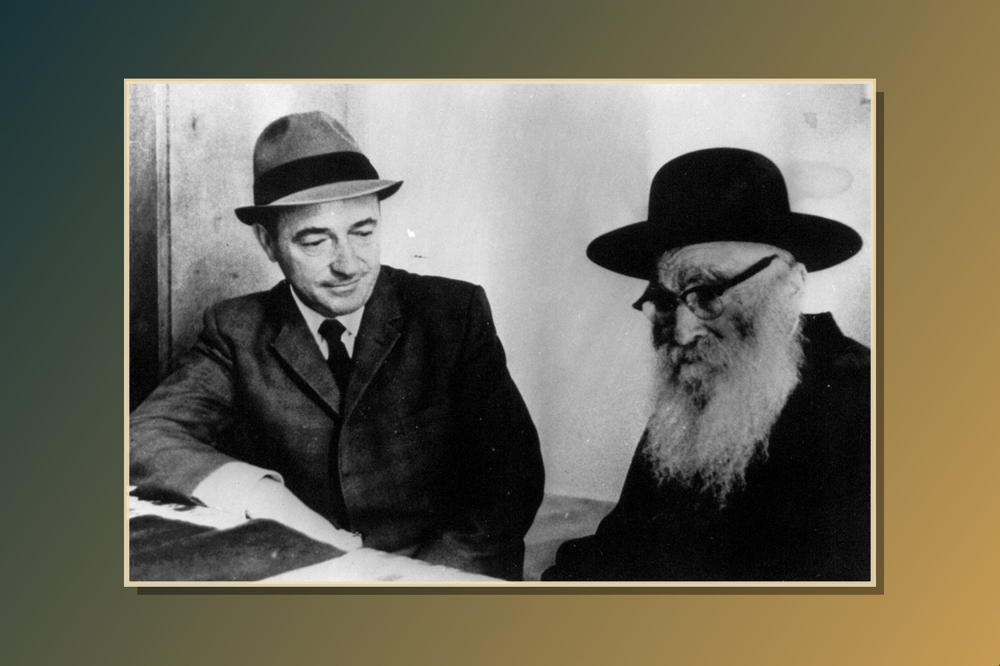
הרב אריה לוין נקרא בפי כל "ר' אריה". נולד בו' ניסן תרמ"ה (1885) באורלא, עיירה הסמוכה לביאליסטוק שברוסיה הלבנה. כבר כשהיה צעיר מאוד עזב את ביתו וגלה למקום תורה. הוא נדד מישיבה לישיבה, למד בבריסק ובפינסק ונודע כמתמיד ועילוי. משם המשיך בנדודיו אחר מקום תורה והגיע למינסק, משם נסע לישיבת סלוצק ולמד אצל הרה"ג איסר זלמן מלצר. לאחר מספר שנים, בשנת תרס"א (1901), עבר ללמוד שנה אחת בהלוסק, ולאחר שנה פנה לישיבת וולוז'ין, והתקבל כתלמיד, וקיבל קצבה שאפשרה לו ללמוד בנחת. נלב"ע ט' ניסן תשכ"ט.
אהבתו של רבי אריה לוין זצ"ל לארץ ישראל היתה גדולה לאין שיעור. תמיד היה משמיע מילים אלו: תורה, ישראל וארץ ישראל — חד הם. פיו לא פסק מלספר בשבחה של ארץ ישראל ובשבח בוניה. ביחוד הראה את אהבתו הגדולה לאסירי ציון — לאותם הבחורים אשר האנגלים שמו בבית האסורים בגלל מסירותם לארץ ישראל.
בהיות ר' אריה בישיבת וולוז'ין התעורר בו רצון לעלות לארץ ישראל, וכך כתב: "באותם הימים התקשרו ענני מלחמה, היא המלחמה בין רוסיה ויפן, ובליבי גמלה ההחלטה לצאת ולהגשים מאווי לב כמוסים, תשוקתי מילדות — לעלות לארץ הקודש, ואני אז כבן 19 שנה". הוא פחד שיגייסו אותו למלחמה, ולכן החליט שזה הזמן להגשים את החלום. לאחר תלאות רבות וגיוס הכסף הדרוש לעלייה, ולאחר פרידה אחרונה מהוריו באורלא, הגיע ר' אריה לארץ ישראל בחודש אדר שנת תרס"ה (1905).
סיפר יהודה הרוש, מנקה רחובותיה של ירושלים בשכונת 'משכנות': פעם אחת ניגש אלי ר' אריה לוין ואמר: "אתה יודע, יהודה, טוב אתה ממני. באמת, אשריך וטוב לך! מקנא אני בך"! "מה אתה שח ר' אריה", השבתי לו, "אתה חכם וצדיק, עוסק כל היום בתורה ובמצוות, ואילו אני — אדם פשוט מנקה אשפה"...
שיסעני ר' אריה ואמר: "אינך יודע את מעלתך, סמוך עלי, אני מבטיחך נאמנה: טוב אתה ממני, אתה מתקן העולם ומנקה את חוצותיה של ירושלים, במו ידיך עושה אתה את עולמו של הקדוש ברוך הוא טוב יותר, נקי יותר... מקנא אני בך..." כך עמדנו והתווכחנו, אני בשלי והוא בשלו. אך מה אומר לכם, כשפנה הוא ללכת ואני נותרתי לבדי, עם המטאטא ועם עגלת הזבל, נעשה לי לפתע טוב על הלב, הרגשתי כמו בן מלך. בפעם הראשונה בחיי... כמו בן מלך.
(צדיק יסוד עולם)
מספר שמחה רז: יום אחד קיבלתי מכתב לביתי מאדם מראשון לציון, ובו מספר אותו יהודי יקר שבילדותו היה לו קשה מאוד בלימודים, ובעקבות כך נאלץ לעזוב את הלימודים והפך להיות עובד הניקיון של בית הספר — דבר שגרם לו להרגיש עצמו ככישלון, כאילו חלילה שאינו שווה שום דבר. יום אחד הגיע לידו הספר 'צדיק יסוד עולם', והנה קורא הוא סיפור זה, שבו אומר אותו צדיק מופלא שהוא מקנא בעובד הניקיון, ושמעשיו חשובים ויקרים עד מאוד, שהוא מתקן העולם.
"ואז הרגשתי מהפך בכל חיי"
איני כישלון שאינו שווה שום דבר, הרי מה שאני עושה הוא דבר גדול ונפלא, תיקון העולם, וזה חשוב ויקר מאוד בעיני ה' יתברך. התמלאתי שמחה, חיי התמלאו משמעות, הרגשתי תחושת שליחות נפלאה בעבודת הניקיון שאני זוכה לבצע, עד שהחלטתי שבנוסף לעבודתי הרגילה אלך להתנדב כמנקה בישיבה, להוסיף ולתקן את העולם. הרי אינני כישלון שלא שווה דבר — אני בן של מלך!
צדיק אחד היה אומר: כתוב בתורה על ארץ ישראל ש"תמיד עיני ה' אלהיך בה" — אם כך הדבר שהקב"ה מסתכל על הארץ הזאת כל הזמן, הייתכן שאנו נניח אותה לא מטופחת? צריך נוי, צריך פרחים, שיהא נעים לעין. תקנות רבות תקנו חכמינו משום "תפארת ארץ ישראל" (עיין הערה), להבטיח את היופי החיצוני של הערים בארץ ישראל, שעל ידי כך יוכלו תושביה לאהוב את הארץ.
מסופר על ר' אריה לוין זצ"ל שיצא מפתח ביתו, ועל הסף ישבו ילדי הסביבה ושיחקו במשחקיהם. ניגש ר' אריה אל הילדים, ליטף את פניהם בחיבה אבהית, ומלמל בפיו: "אם מצווה היא לרצות ולחונן את אבניה ועפרה של ארץ ישראל כדברי הכתוב: 'כי רצו עבדיך את אבניה ואת עפרה יחוננו' — הרי את ילדי ישראל שבארץ ישראל, על אחת כמה וכמה..." (איש צדיק היה)
ברגעים של גילוי לב, סח פעם הגאון רבי חיים יעקב לוין זצ"ל לבנו: הייתי דבוק בתורת ארץ ישראל, וקשה היה לי עד מאוד כששלח אותי אבי [הצדיק רבי אריה לוין זצ"ל] ללמוד תורה בחו"ל אצל הגאון רבי ברוך בער ליבוביץ זצ"ל. בטרם עלותי לרכבת לקחתי איתי כמה אבנים מארץ ישראל בכיסי, כדי שאוכל תמיד לחוש את אבני ארץ הקודש.
אך טרם יצאה הרכבת, פרצתי בבכי ואמרתי: "מילא אני שמחויב לקיים כיבוד אב וללמוד תורה, מותר לי לעזוב את הארץ — אבל אתן, אבנים, למה שאתן תעזובנה את הארץ?"... נטלתי את האבנים והשלכתי אותן החוצה מבעד לחלון... (דרך אבות, גיליון "איש לרעהו", שלח תש"פ)
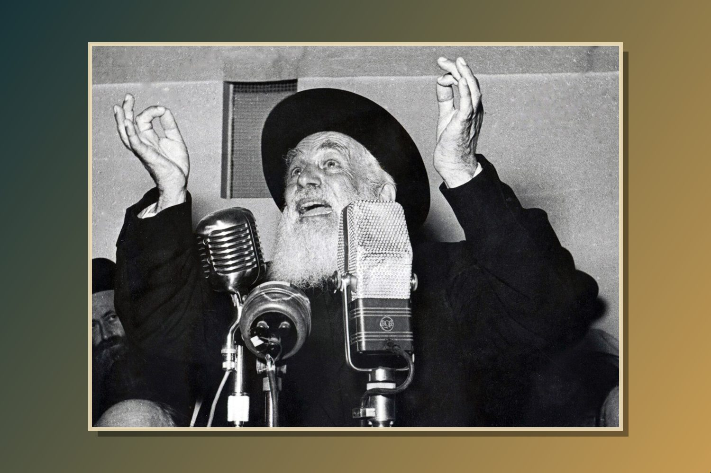
ר' יוסף שלמה כהנמן נולד בקול (ליטא) בשנת תרמ"ו לאביו רבי יהודה לייב. למד בטלז אצל הגר"א גורדון, ואחר כך בנובהרדוק, שם הוסמך לרבנות על ידי בעל 'ערוך השולחן'. בשנת תרס"ח הגיע לראדין, שם למד בחברותא עם הגר"א וסרמן בכולל קדשים של החפץ חיים. בשנת תרע"ט נבחר לרב העיר פוניבז', שם טיפח את הישיבה ואת מוסדות הקהילה לתפארה.
בשנת ת"ש יצא לארצות הברית בשליחות ממשלת ליטא למען הפליטים היהודים, ובדרכו עבר בארץ ישראל; בעודו שם עברה ממשלת ליטא מן העולם, וכך נמנעה ממנו שלא בטובתו האפשרות לחזור. מיד עם בואו לארץ חגר מותניו והחל לבנות מחדש את עולם התורה שחרב בשואה שבה איבד את משפחתו ואת כל מפעלי חייו: הקים את ישיבת פוניבז' בבני ברק ואת ישיבת גרודנא באשדוד, מוסדות 'בתי אבות' לקליטת ילדי טהרן וילדי השואה, ואת מפעל ה'ירחי כלה'. בכל פעולותיו התייעץ עם מרן החזון איש, שהתווה את דרכו. נפטר בכ' אלול תשכ"ט.
זיקתו הנפשית המופלאה של מרן הגאון רבי יוסף שלמה כהנמן זצ"ל — הרב מפוניבז' — לארץ חמדה, "שנתחמדו לה כל גדולי עולם" (תנחומא, משפטים יז), היתה מגילויי השיא של אישיותו. משחר ילדותו השתוקק ונכסף אליה. אף כאשר יסד ובנה את ישיבתו הגדולה בפוניבז' שבליטא, היו עיניו ולבו תמיד בארץ הצבי, כשהוא מתכנן להעביר לשם את כל ממלכתו בבוא מועד.
עוד מרגלא בפומיה: מצינו במדרש חז"ל (מכילתא, פרשת בשלח) שהבטיח הקב"ה לתת לנו "שש מדות טובות... ארץ ישראל מדה אחת". מה פשר הגדרה זו? אלא כמו שעולם הבא הוא מדה רוחנית באדם, ויש גם בעולם הזה מי שהוא "בן עולם הבא", כך גם ארץ ישראל היא מדה, ויש מי שהוא בעצם מהותו "יהודי שארץ ישראל נעשתה חלק ממהותו ומידת נפשו".
פעם אחת בקיץ תשכ"א, כשנוכח במעמד חגיגי שנערך בקיבוץ "שעלבים", קם ודיבר בהתלהבות משבחי ארצנו הקדושה, ופתח בפסוק מפרשת השבוע, פרשת תבוא, בפי מביא הביכורים: "הגדתי היום לה' אלקיך כי באתי אל הארץ...", ושאל כמשתומם: "וכי רק העולים החדשים נצטוו להביא ביכורים, וכל שהוא יליד הארץ אינו במצוה זו?!" אלא הכוונה, הוסיף, שגם כל אחד מוותיקי ארץ ישראל יאהב אותה אהבת נעורים נצחית, כאילו רק היום בא אליה. באותו מעמד הקשיב לדבריו אחד מראשי הציונים החילונים, שר בממשלה, והפליט בהתפעלות: "מי מאיתנו אוהב את ארץ ישראל בעוצמה כזאת, כמוהו..."
מרוב געגועים לארץ ישראל קננה בלבו שאיפה כמוסה לעלות הנה גם בלעדי הישיבה. באיגרת מחודש סיון תרצ"ג לרבי יוחנן זופוביץ ז"ל, שהתכונן בימים ההם לעלות ולהשתקע בארץ, הביע הרב זצ"ל את משאלתו במילים מרגשות: "והלוואי כי נזכה להתראות שמה... לוּא זכיתי להעמיד את הישיבה הקדושה, משאת כל חיי ונפשי, על בסיס נכון שתתקיים, כי אז פניתי מכל וקבעתי גם כן מקומי למקום שהבטיחה תורתנו הקדושה 'ועלית שמה אל המקום אשר יבחר ה''".
במשא שהשמיע בשנת תש"ט בוועידה ציבורית שהתכנסה באטלנטיק-סיטי, במעמד אלפי יהודים, תמך יתדותיו בפסוק מפרשת שלח (במדבר יד, לא) "וידעו את הארץ..." והסביר שזו לשון אהבה וכלולות, לשון נישואין, ללמד שאנשים מישראל חייבים להתקשר עם ארץ ישראל קשר של קיימא — מבחינה נפשית — ולדור בתוכה.
חמשת החושים הרגילים של בני תמותה אינם מספיקים כדי לראות את מה שראה רבינו יוסף שלמה בארץ ישראל. "ארצנו ארץ שמימית", כתב פעם. בשיחה אחת הסביר את דברי חז"ל: "אתה מבקש לראות את השכינה בעולם הזה? עסוק בתורה בארץ ישראל". לכאורה הרי שנינו באבות "שניים שיושבים ועוסקים בתורה שכינה עמהם" — משמע עמהם היא בכל מקום, ולאו דווקא בארץ ישראל? אלא הביאור: השכינה שורה בעולם כולו, בכל מקום שיהודים עוסקים בתורה, אך יתרונה של ארץ ישראל שבה אף רואים את השכינה.
יום אחד, כאשר חלפה ליד ישיבת פוניבז' הלוויתו של יהודי פלוני מתל אביב, איש לא ידוע ברבים, נכנס הרב כהנמן וביקש מהתלמידים לרדת ולחלוק כבוד אחרון לנפטר. אף הוא עצמו הצטרף אל המלווים, ולפני קברות ביקש להשמיע דברים אחדים — לא הספד רגיל, אלא הסבר מדוע ביקש מהם להשתתף:
"בעצם ימי המלחמה וההשמדה, כשהחלה הקמת הישיבה, נזקקתי דחוף לשלוח מברק לידידים ביוהנסבורג שבדרום אפריקה למימוש נכס שהיה לנו שם. נסעתי למברקה של הדואר בתל אביב, אך כשהגעתי התברר שאין ברשותי אפילו מחיר משלוח מברק. תוך הליכתי לבית הכנסת עצר אותי אדם זה, הנפטר דנן, ששאלני מדוע אני מדוכא כל כך. שחתי לו את צערי, והוא השתומם: 'עכשיו לבנות ישיבה? הלא כולם אומרים שהאויב הנאצי עומד לפלוש הנה... אם לקולי ישמע, יקום ויסע לדרום אפריקה'.
"ואני נעניתי ואמרתי לו: אני מאמין באמונה שלמה כמו שאמר החפץ חיים ש'בהר ציון תהיה פליטה והיה קדש'. חובתנו בשעה גורלית זו להקים את התורה — בנה אבנה ישיבה כאשר דיברתי. והנה שינה האיש את טעמו ואמר: 'ניצחתני רבי... דווקא עכשיו יש לבנות ישיבה'. ועודנו מדבר, הוציא מארנקו והושיט לי את הסכום הדרוש למשלוח הטלגרמה — וממשלוח זה התפתחה כל השתלשלות הדברים, קמה ישיבת פוניבז' וגם ניצבה".
"ובכן", סיים הרב מפוניבז', "מתוך רגש של הכרת הטוב לאדם זה שהיה לו חלק ב'בראשית ברא' של הישיבה, ועכשיו הלך לבית עולמו, הרגשתי חובה שנחלוק לו כולנו כבוד ללוותו אל מקום מנוחתו". (הרב מפוניבז', חלק ג, עמ' קטז)
בתקופה שעלה רבנו לארץ היתה תנועת התשובה בגדר חלום רחוק, אולם לא כן היה הדבר בעיני רבנו — הוא ראה את העתיד לפני עיניו כמציאות ממשית. בנאומו המפורסם בוועידה הארצית של אגודת ישראל שהתקיימה בפתח תקווה בחודש סיון תש"א, בעיצומם של ימי ההשמדה הנוראה, כאשר רוב הנואמים דיברו על המלחמה והשלכותיה, דיבר רבנו על בניין ויצירה, על חובת השעה לבנות כאן מחדש את מרכזי התורה שנחרבו באירופה. בתוך דבריו הכריז בפאתוס משפט שברבות הימים הפך לאמרת כנף: "כתבו תפילין ומזוזות לילדי עין חרוד, עוד נקים תלמודי תורה וישיבות בעבור ילדי נהלל!" — היו אלו קיבוצים חילוניים מובהקים שלא היה בהם זיק של יהדות. (במחיצתם, חלק ב)
היום, ברוך ה', יש בית כנסת ושיעורי תורה בקיבוץ עין חרוד — החזון בהתגשמותו.
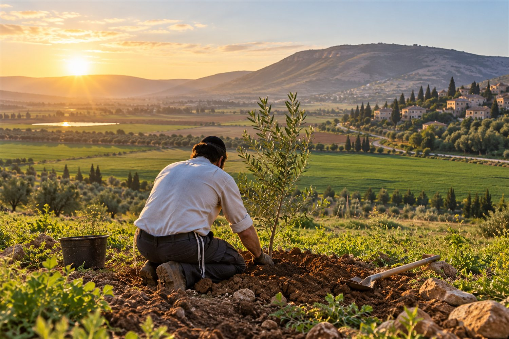
הרב אליהו לופיאן נולד בשנת תרל"ו בעיירה גרייבא שבפלך לומז'ה בליטא. משם עבר ללמוד בבית המדרש בקלם אצל הסבא מקלם והרב יצחק בלאזר, ונתפרסם כאחד האישים הבולטים שם. בשנים שלפני מלחמת העולם הראשונה יסד וניהל את הישיבה הקטנה של קלם. בשנת תרפ"ח הגיע ללונדון לגייס כספים לישיבה, ושם הוצע לו לשמש כראש ישיבת "עץ חיים", ואכן קיבל את המשרה.
בשנת תש"י עלה לארץ ישראל והתגורר בירושלים. החל למסור שיחות מוסר בבית הכנסת "זיכרון משה" ובבית הכנסת "כלילת שאול" בגבעת שאול, וכיהן כמשגיח בישיבת קמניץ. בשנת תשי"א מונה למנהל הרוחני של ישיבת כנסת חזקיהו בזכרון יעקב. החזון איש בירכו במילים "עוד ינובון בשיבה". הרב לופיאן נפטר בגיל 94, בכ' באלול תש"ל, ונטמן בהר הזיתים בירושלים.
מדמויות ההוד שהקימו עולה של תורה ומוסר בארץ ישראל המתחדשת, היה הגאון רבי אליהו לופיאן זצ"ל, שנודע בהיותו זהיר בכל פעולה שעשה שתהיה מתוך מחשבה והחלטה, ולעולם לא עשה פעולות סתם כבדרך אגב. דווקא לכן, הפתעה רבה ציפתה לבני ישיבתו, ישיבת 'כנסת חזקיהו' בכפר חסידים, כאשר יום אחד ראו את רבם הנערץ יושב בפינתו ובוכה בכי תמרורים.
לבסוף אזר מאן דהו אומץ, ניגש אל הרב ושאל: "ילמדנו רבינו, על שום מה הרב בוכה? קרה משהו?" "לא ולא", החווה רבי אליהו בידיו, ואחרי הפצרות נעתר והסביר: "מיום עלותי לארץ הקודש, מהרגע בו דרכו כפות רגליי על עפרה המרומם של ארץ ישראל, נזהרתי שלא לירוק חלילה על אדמת קודש זו. הן אני נמצא בטרקלינו של מלך, בארץ אשר עיני השם בה כל העת, במקום בו כל רגב אדמה קדוש ונשגב — וכי יעלה על הדעת לירוק במקום כזה?!
"היום זה קרה. בחוסר תשומת לב רגעית, ירקתי על האדמה, ביזיתי את אדמתה של ארץ ישראל! אני שבור וכאוב על העניין, ובודק בנפשי ומפשפש בחדרי לבי, אם אני חווה ירידה רוחנית תלולה אשר הובילה אותי לאבד מתחושת קדושתה של הארץ, עד שכבר לא נמנעתי מלירוק עליה..." (מהקדמת הספר 'לב אליהו')
סח הגה"צ רבי יעקב גלינסקי זצ"ל: אילו היו מספרים לנו שישנו יהודי שאינו יוצא כל שבעת ימי הסוכות מסוכתו — אוכל בסוכה וישן בה, מתפלל בה במניין ולומד בה — מה היינו אומרים? אשריו ואשרי חלקו, בכל רגע הוא מקיים מצוות עשה מן התורה. אמנם חג הסוכות הוא רק שבוע אחד מתוך חמישים שבועות שבשנה — ואם היה יכול להאריך את הסוכות לחודש, לחצי שנה?
ובכן, שבעה מיליון יהודים בארץ הקודש, כן ירבו, יושבים "בסוכה" במשך השנה כולה. שהרי ישיבת ארץ ישראל מצוות עשה, ולא מצווה "רגילה", אלא שקולה כנגד כל המצוות שבתורה (ספרי). היש לנו מושג עם איזה אוצרות נעלה למרום?! אשריכם ישראל, היושבים בארץ ישראל!
אז מה חסר? הכוונה!
הלך הגאון הצדיק ר' אליהו לופיאן זצ"ל ברחובה של עיר, וראה פועלים יהודים בעבודת דחק, עומדים בחפירה צרה, השמש קופחת בעז על גבם החשוף, והם מתקינים כביש חדש. נענה ואמר: ראשית לכל, העמל לפרנסתו עוסק בדבר מצווה. בנוסף, עוסק הוא במעשה חסד עם בני השכונה. והעולה על כולם — עוסק הוא בפועל ביישוב ארץ ישראל. ומה חסר? הכוונה! שהרי נפסק להלכה שמצוות צריכות כוונה, שכן כתב הרמב"ן (שמות יג, טז) כי "כוונת כל המצוות, שנאמין באלוקינו ונודה אליו שהוא בראנו", וקדשנו במצוותיו וציוונו, ואנו מקיימים ציוויו — ובאם לאו, "העיקר חסר מן הספר"! (ר' יעקב גלינסקי, "והגדת", דברים)
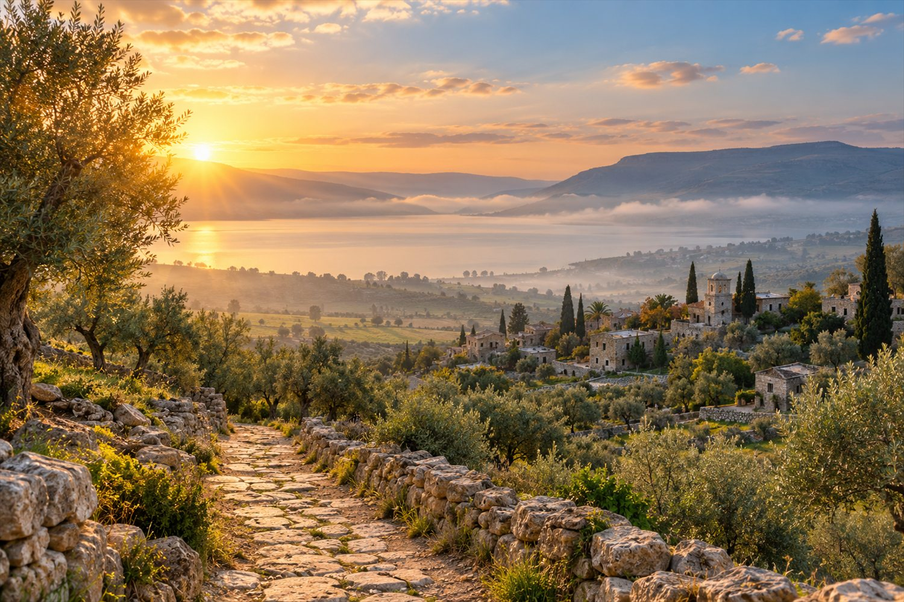
רבי יחזקאל לווינשטיין נולד בוורשה בשנת תרמ"ה למשפחה חסידית. בהגיעו לגיל בר מצווה החל לעבוד כנער שליח לפרנסת הבית, ולאחר שנגנבה משכורתו שם אל לבו כי העולם הזה הבל, ונסע לראדין לישיבתו של החפץ חיים. שיחותיו של רבי ירוחם ליבוביץ, שבאותה עת שימש שם כמשגיח, השאירו רושם עז עליו. לאחר מלחמת העולם הראשונה שימש כמשגיח בישיבת מיר.
בשנת תרצ"ה עלה לארץ ישראל, ושימש כמשגיח בישיבת לומז'ה בפתח תקווה, אך בשנת תרצ"ו שב לפולין להיות משגיח בישיבת מיר, ונדד עמה לשנחאי במלחמת העולם השנייה, למרות שהיה בידו רישיון עלייה לארץ ישראל. בשנת תש"ט עלה שוב לארץ ישראל עם הרבה מתלמידי הישיבה. בשנת תשי"ד, לאחר פטירת הגרא"א דסלר, נקרא לכהן כמשגיח בישיבת פוניבז'. נפטר בי"ח באדר תשל"ד. שיחותיו ואיגרותיו לוקטו בסדרת הספרים "אור יחזקאל".
בקשר נפשי עמוק היה קשור רבנו ר' יחזקאל לוינשטיין זצ"ל לארץ ישראל. רבנו ראה בארץ ישראל מקום בו ניתן לקנות אמונה חזקה בבורא, הן מחמת הניסים שאירעו בה בעבר והן מחמת הניסים שמתרחשים בה בהווה. "המקום משפיע על האדם", היה אומר, "בארץ ישראל הוא משפיע קדושה ורוחניות, ובחוץ לארץ טומאה ואהבה לגשמיות ולכסף".
בשנת תרצ"ה החליט רבנו לנסוע לארץ ישראל. כשנודע הדבר למשגיח הגה"צ ר' ירוחם ממיר זצ"ל, שאלו למה הוא נוסע — הלא שבתו בבית ה' בישיבת מיר המעטירה, ומה חסר לו? אמר לו רבנו כמה נימוקים, ולא נתיישבו על לב ר' ירוחם, עד שאמר: "הלא עמל אני על השבת האמונה אל הלב, וכשאהיה בארץ הקודש, באווירא דארץ ישראל ומקום כל הניסים, אקנה את האמונה בצורה יותר מוחשית" — וקיבל ר' ירוחם את הדברים. (אוצרות רבינו יחזקאל, אמונה מב)
כשהסתיימה מלחמת העולם השנייה ועמדה בפני תלמידי מיר בשנחאי השאלה לאן ממשיכים — לארץ ישראל או לארצות הברית — עלה רבנו למסור שיחתו, והוציא מכיסו שני מכתבים. אמר: "קיבלתי מכתבים משני תלמידים שלמדו איתנו במיר ובשנחאי. האחד עלה לארץ ישראל והשני הגיע לארצות הברית". פתח והקריא: התלמיד שעלה לארץ הקודש סיפר אך ורק על המצב הרוחני הנפלא במקום התורה החדש שלו, והתלמיד שהגר לארצות הברית כתב אך ורק על המצב הגשמי הטוב באמריקה. "ועתה", סיים רבינו, "תשפטו אתם להיכן כדאי להמשיך..." (הגדת ידיו אמונה, עמ' 263)
המשגיח עצמו רצה מאוד להיות בארץ ישראל, ולכן בעת שעזב את שנחאי רצה להעביר את הבחורים מיד לארץ ולא לארצות הברית, אך הדבר לא התאפשר — הבריטים שלטו אז בארץ. גם לאחר יותר מעשר שנים מעלייתו הביע שמחתו על שזכה לעלות לארץ ישראל. (עמוד היראה והעבודה, עמ' 99)
באחד ממכתביו כתב המשגיח זצ"ל, בסרבו להשתתף בשמחה משפחתית שהתקיימה בחוץ לארץ: "כבוד חתני היקר, כמדומני כי קשה הענין מאד עלי, מכמה סיבות שונות... בפרט נסיעה מארצנו הקדושה אשר חביב עלי מה ישיבתי בארץ ישראל". (מכתב רנט) וכן כתב לתלמיד שביקש לבוא לביקור בקיץ: "כדאי ביאתך לארצנו הקדושה אף לזמן קצר, כי גם רק לראות היה למתנה למשה רבנו". (מכתב שכו)
"הארץ הקדושה היא נקודת ליבנו באמת, כי אין לחלק הארץ מהתורה... ואין לנו תורה באמת רק תורת הארץ, כי מציון תצא תורה, והשגת הארץ היא באמת קודם התורה, כי היא נחלת אבות, והתורה היא תורה ציווה לנו משה". וכך גם כתב ב"פחד יצחק" להג"ר יצחק הוטנר זצ"ל: "בדברי על אודות הפרדה מארץ ישראל אי אפשר לי שלא להדגיש עד כמה קושי אני מרגיש בזה... הרבה הרבה מעיקרי השקפות בדעת תורה ובהבנת היהדות נתחוורו לי ונתבססו אצלי רק הודות להשפעתה עלי... וכיצד מתפרדים ממנה?" הסבא מקלם ז"ל היה מבאר: "ואבדתם מהרה מן הארץ הטובה" — "הארץ הטובה", שמטיבה עמו ונותנת לו סייעתא דשמיא.
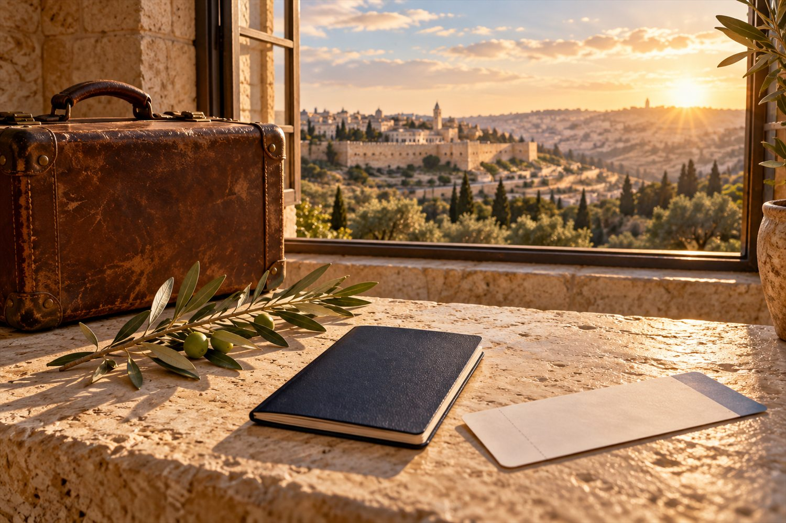
הרב אפרים שמואל לרנר (פפרמן) נולד בבריסק בתרל"ט לרב מרדכי לרנר, מראשי הקהילה ומקורבו של הרב יהושע ליב דיסקין. בהוראת המהרי"ל דיסקין, בהיותו בן 9 נכנס ללמוד בישיבת תורת חיים בירושלים. במקביל ללימודיו הרגילים עסק רבות בתורת הנסתר ונודע כאחד ממקובלי ירושלים, ובתרס"ו נכנס ללמוד תורת הנסתר בישיבת המקובלים "שער השמים". בסוף שנות ה-40 של המאה העשרים מונה לכהן כראש ישיבת שער השמים ומנהלה. נפטר בכ"א בתמוז תשכ"ב.
גדולי ירושלים שהכירו במעלותיו של רבי אפרים שמואל לרנר זצ"ל, מגדולי מקובלי 'שערי חסד' וראש ישיבת 'שער השמים', הטילו עליו לצאת לאמריקה ולחזק את היהודים שהיגרו אליה, כדי שישמרו שבת ויקיימו מצוות כהלכתן. השליחות, שהיתה אמורה להיות קצרה, התארכה — בעת שהותו בארה"ב פרצה מלחמת העולם הראשונה, והוא נאלץ להישאר בארץ נכר תקופה ממושכת.
כאשר זכה לחזור לארץ ישראל, לגודל חיבת הארץ, גמר בנפשו שלא לעוזבה עוד לעולם, ומיד קרע לגזרים את דרכונו האמריקאי ואת כל מסמכי היציאה לחוץ לארץ — ובכך ניתק את עצמו מן הגולה כליל, וקשר את עצמו בקשר בל ינתק לארץ הקודש עד סוף ימיו. רבי אפרים שמואל גם הקפיד מאוד שלא לצאת מירושלים אלא לצורך גדול. ידוע רק על שני מקרים בהם יצא ממנה: להתראות עם ה'חזון איש' ולהלוויתו. (מראש צורים אראנו ומגבעות אשורנו, עמ' 23)
בשנת תרס"ט הצטרף רבי אפרים שמואל לרנר זצ"ל לרבי נפתלי צבי פרוש והיה שותף בהקמת שכונת שערי חסד ואף היה מראשוני המתיישבים בה. באותה עת החל באיסוף כספים לבניית בית הכנסת הגר"א בשכונה, ובכתביו הסביר: "עצם התחדשות היישוב היהודי בארץ ישראל נבע מרצון הגר"א לעלות לארץ, ומן השמים עיכבוהו. ותלמידיו הם שהגשימו שאיפתו — מן הראוי אפוא להנציח בארץ ישראל ככל האפשר, ישיבות ובתי מדרש על שם הגר"א ומנהגיו".
בתרצ"ב החליט להרחיב את בית הכנסת, והקים את "קרן הבניין" של בית המדרש הגדול ות"ת בשכונת שערי חסד. את הקמת הקומה השנייה תכנן לפרטים, ועמד על כך שלא יהיו עמודים שיתמכו את תקרת בית הכנסת כדי שלא לפגוע במרחבו וביופיו — לבסוף מצא מהנדס שהסכים לאשר בנייה זו, וגג בית הכנסת עומד ללא תמיכת עמודים עד היום. לאחר הקמת בית הכנסת מונה הרב לרנר לשמש כשליח ציבור ובעל קורא בו, תפקיד אותו נשא במשך עשרות שנים.
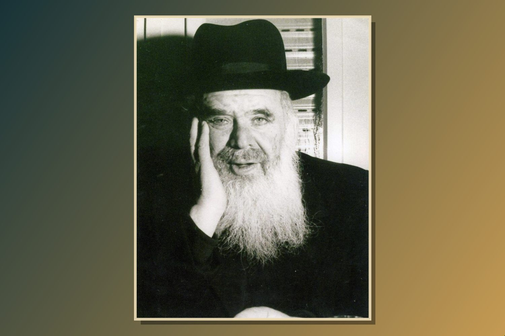
ר' חיים שמואלביץ נולד בקובנה בב' בתשרי תרס"ג. בחורף תרצ"ו התמנה לר"מ בישיבת מיר והחל למסור שיעורים. בתקופת שהותה של הישיבה בשנחאי במלחמת העולם השנייה ניהל את כל הישיבה. עם פטירת חותנו בשנת תשכ"ה מונה לכהן תחתיו בראשות ישיבת מיר, ולאחר פטירת גיסו הרב חיים זאב פינקל אף החל למסור שיחות מוסר בישיבה. שיחותיו התפרסמו מאוד ונכתבו בספר 'שיחות מוסר'. נפטר בארץ ישראל בג' בטבת תשל"ט.
בשיחה שמסר רבי חיים שמואלביץ זצ"ל, עמד על שאלה חשובה — כיצד זוכים למעלות ארץ ישראל? "הנה יש להתפלא עלינו", אמר ר' חיים, "אנו דרים בארץ ישראל, ומדוע אין אנו מרגישים כראוי את העלייה וההשפעה הבאה לנו על ידה?"
"מי שלא הודה בארצו לא נקבר בארצו" — מדוע?
פשר הדבר למדנו מדברי חז"ל (דברים רבה ב, ח): "אמר משה לפניו: רבש"ע, עצמותיו של יוסף נכנסו לארץ ישראל ואני איני נכנס. אמר לו הקב"ה: מי שהודה בארצו נקבר בארצו, ומי שלא הודה בארצו לא נקבר בארצו. יוסף הודה בארצו מנין — גבירתו אומרת 'ראו הביא לנו איש עברי', ולא כפר, אלא אמר 'גנוב גונבתי מארץ העברים'. אתה שלא הודית בארצך, אין אתה נקבר בארצך — כיצד, בנות יתרו אומרות 'איש מצרי הצילנו מיד הרועים' והוא שומע ושותק".
הדברים מפליאים — הרי כשבנות יתרו אמרו "איש מצרי" היה בזה גם הכחשה על יהדותו של משה, והוא שמע ושתק, ולא מצינו על כך שום תביעה עליו! ואולי משום שהיה בדבר סכנה. ומכל מקום, ענין זה ש"מי שלא הודה בארצו לא נקבר בארצו" אינו בתורת עונש, אלא הוא מציאות: כל מי שאינו מודה בארץ אינו שייך לארץ, ואין מועיל מה שיש לו טעמים וסיבות לכך.
מכאן לימוד עבורנו: בכדי לקבל את השפע המושפע ממרום על ארץ ישראל ועל יושביה, כאמור "תמיד עיני ה' אלוקיך בה" (דברים יא, יב), יש תנאי לכך — שצריך להיות שייך לארץ, "מודה בארץ", דהיינו להכיר במעלתה ובחשיבותה, ורק על ידי הרגשה זו נכנס האדם תחת ההשפעה המיוחדת לארץ. (שיחות מוסר, תשל"ג, דברים)
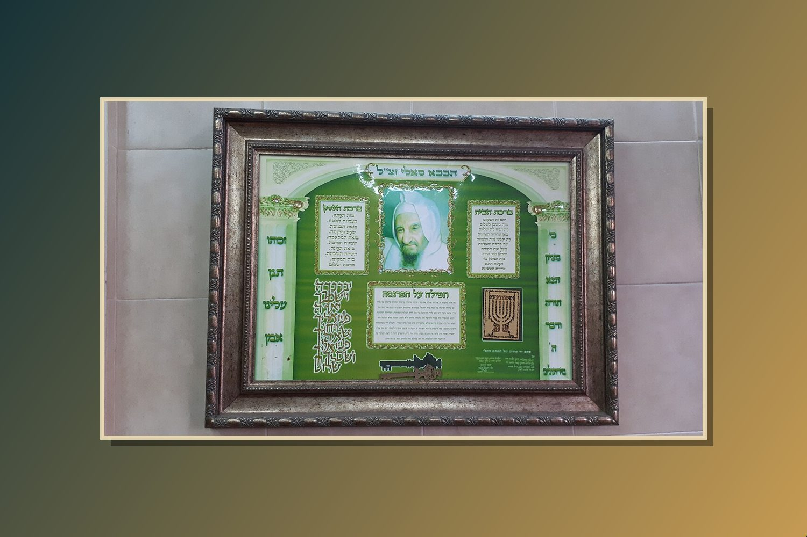
ר' ישראל אבוחצירא נולד בשנת תר"ן בעיר ריסאני שבמחוז תפילאלת במרוקו, נכדו של הרב יעקב אבוחצירא בעל ה'אביר יעקב'. בשנת תר"ף, בעקבות קרבות באזור בין התושבים לכובשים הצרפתיים, הוצא אחיו רבי דוד להורג, ואילו הבאבא סאלי ואחיו רבי יצחק ברחו לעיירה בודניב ושם הקימו מחדש את הישיבה. באותו זמן התמנה הבאבא סאלי לרב מחוז תפילאלת.
בשנת תשכ"ד עלה לארץ ישראל להשתקע בה עם משפחתו, וגר ביבנה בקרבת חתנו, ולאחר מכן באשקלון. בשנת תש"ל עבר לגור בנתיבות, שם גר עד פטירתו.
בכל הזדמנות סיפר רבינו ר' ישראל אבוחצירא — ה'בבא סאלי' — עד כמה רבה כמיהתו לזכות לחלות פני ארץ הקודש ולחונן עפרה. תמיד הרבה לספר בשבח הארץ וקדושתה ועמד על חשיבות ההתיישבות בה כמקום להתעלות ולהזדככות הנפש. נכדו ר' דוד אבוחצירא שליט"א מנהריה זוכר כיצד היה רבינו מספר לו על רצונו העז לבוא לארץ הקודש: "זכורני כיצד היינו יוצאים מדי יום שישי לפקוד את קברי הצדיקים בבית העלמין הקטן שבתפילאלת, ולפעמים היינו נתקלים בקברי משולחים שהגיעו מארץ הקודש והשיבו את נשמתם בהיותם במרוקו. רבינו היה ניצב למול מצבתם ונאנח: מתי כבר תדרוך כף רגלי על אדמת הקודש בארץ ישראל?"
בשנת תרפ"א, בהיותו בן שלושים ואחת, זכה להגשים את משאלתו. בהגיעו לירושלים קיבלו את פניו גדולי העיר, ראשי ישיבות וגדולי המקובלים. שנה שלמה שהה ר' ישראל בארץ הקודש.
בשנת תשי"א, תשע שנים לאחר מכן, שב ובא לארץ ישראל בפעם השנייה, וכוונתו היתה להשתקע — אולם משראה את המצב הרוחני הקשה שהיה אז, התלבט מאוד אם לא עדיף לחזור למרוקו. הוא הועיד את פניו לתל אביב להיוועץ עם הגה"ק רבי אהרן מבעלזא, שהגיב בנחרצות כי אל לו לעזוב את הארץ למרות מצבה הרוחני העגום, כי כך פני העולם בטרם הגאולה. גם עם מרן ה'חזון איש' החליף דברים, ואמר לו החזון איש: "יישאר מר בארץ, ובמשך הזמן ימצא חוגים חרדיים ואנשים הקרובים ללבו, ואז תמצא הארץ חן בעיניו ויראה את סגולותיה להתעלות בעבודת ה'".
שנה אחר שנה עלו יהודי מרוקו לארץ הקודש בגלי העלייה ההמוניים, אך רבם וקברניטם לא היה בין הראשונים לעזוב את הגולה, והמתין עד אשר החלק הארי של יהודי מרוקו כבר עזב את ארצו. בשנת תשכ"ד, לאחר שרוב בניו הגיעו לחוף מבטחים, החל אף הוא מכין עצמו לקיום משאלת חייו, וסיים את עשרות שנות מנהיגותו במרוקו ושם פעמיו לארץ הקודש. את זמנו בתא האונייה הקדיש להכנות לקראת הפגישה עם קדושת הארץ, וכמעט לא יצא מפתח תאו, שקוע בלימודו ובתפילתו לכל אורך הנסיעה.
האם לנתיבות יש קדושת ארץ ישראל?
לרבינו היה ספק האם נתיבות נחשבת בתוך ארץ ישראל, כי בגמרא כתוב שגבול ארץ ישראל (לגבי דין מסוים) בצד דרום הוא אשקלון. נפגש ר' ישראל עם ר' יששכר מאיר זצ"ל, ראש ישיבת הנגב, ודן עמו בעניין. בסופו של דבר הסכים ר' ישראל כי אכן קדושת ארץ ישראל חלה על נתיבות, ונתן את הסכמתו לעבור ולהתגורר בה. (מתוך הספר "בבא סאלי")
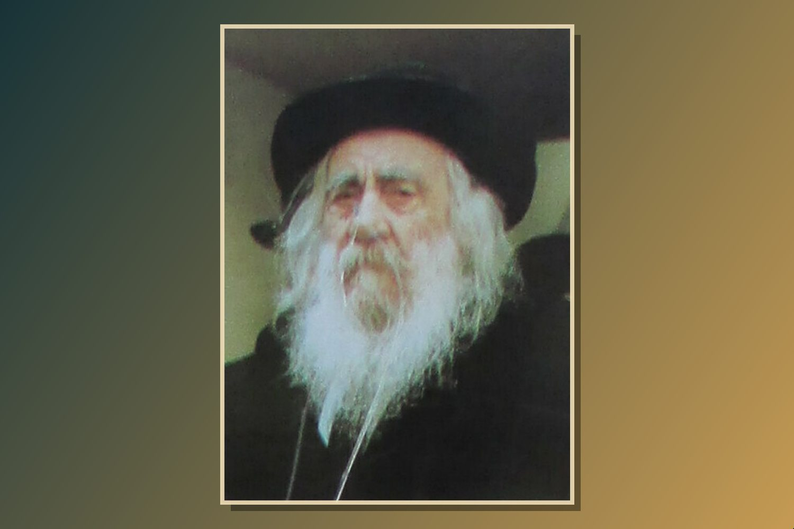
רבי יעקב ישראל קניבסקי (הסטייפלר) נולד בכפר טשאן באוקראינה בשנת תרנ"ט לאביו רבי חיים פרץ. למד בישיבות נובהרדוק בהומל ובביאליסטוק, ונודע כעילוי ושקדן. בהיותו בן עשרים גויס לצבא הרוסי, שם מסר נפשו על שמירת השבת. בשנת תרפ"ה פרסם את ספרו 'שערי תבונה', ושמו הטוב הגיע לאוזני החזון איש, ששידך אותו בשנת תרפ"ז לאחותו הצעירה. חיבר גם את 'קהילות יעקב' על רוב מסכתות הש"ס, 'ברכת פרץ' על התורה, וספרי מוסר נוספים. נפטר בבני ברק בכ"ג אב תשמ"ה.
רבי יעקב ישראל קניבסקי שימש כרב בעיר פינסק קרלין. לאחר שהרב מתתיהו זאב טשיגל זצ"ל הקים את ישיבת בית יוסף — נובהרדוק בבני ברק, רצה מאוד שהרב קניבסקי, אותו הכיר עוד מחו"ל, ילמד כר"מ בישיבה, והריץ מכתבים רבים לפינסק, אך שם גנזו את כל המכתבים כדי שהרב לא יעזוב. לאחר תקופה ארוכה שלחו שליח מיוחד לדבר עם הרב, וזה הסכים מיד. הוא חסך פרוטה לפרוטה ממשכורתו הזעומה, ואף מכר את אדרתו של החורף כדי לממן את הנסיעה. בחודש ניסן תרצ"ד דרכו רגליו על אדמת הקודש. (תולדות יעקב) לאחר עלייתו קנה חלקת אדמה בארץ ישראל, אף שלא גר בה, רק כדי שיהיה לו חלק בה. (ארחות רבינו, חלק ג, עמ' קפ)
הרב יעקב ישראל קניבסקי המליץ והמריץ באברכים שיגורו בכל חלקי הארץ, שיתארגנו קבוצות אברכים בכל מקום ויסדירו את ענייני המאכלים עם ההכשרים ושאר ענייני הדת. גם מרן החזון איש היה ממליץ ומבקש מאברכים שיתפזרו לגור בכל חלקי הארץ ולא להתרכז רק בבני ברק, כדי שישפיעו על סביבתם, והורה לבני משפחתו וממקורביו לגור בפתח תקווה לאחר חתונתם. (ארחות רבינו, חלק א, עמ' רלד)
"אכן, לכך נתכוונתי"
החזון איש היה מעודד רבנים צעירים לצאת למקומות שוממים מבחינה רוחנית. כשאלו אחד אם לא יזיק הדבר לחינוך ילדיו, השיב: "אכן, לכך נתכוונתי. לבי סמוך ובטוח כי דאגתך לעתידם הרוחני של ילדיך תדריך את מנוחתך, ויש סיכויים שתקים שם תלמוד תורה עבורם ונמצאו גם אחרים ניצולים". וליהודי חרדי שגר במקום נידח שביקש לעבור לסביבה דתית כי במקומו לועגים לו החילוניים, השיב: "מה טוב שיהא מצוי במקום כזה לפחות יהודי אחד כמוך". (פאר הדור ב, קמא)
סיפר הגר"ח קניבסקי: ה'חזון איש' לא קבע מושבו בירושלים כי רצה להשפיע ביישוב החדש, שלא היה מי שיעשה זאת. בחו"ל היה הגאון ר' חיים עוזר, אבל כאן הרגיש אחריות, כי לא היה אחר. וכן מובא בספר פאר הדור: מה ראה החזון איש שלא להתיישב בירושלים, עיר הקודש, כשהוא מבכר על פניה את בני ברק דווקא? השיב פעם לרבי שמואל וואזנר: "ירושלים היא עיר מלאה צדיקים וגדולי תורה, אולם בישוב החדש מצאתי מדבר... רציתי לשתול בו קצת נטיעות של תורה... לפיכך באתי לבני ברק... אם לא אצליח לשתול, אזי אלך לגיהינום אני עם יושביה כאחד".
כך נהג גם האדמו"ר מצאנז, וכך גם הורה הגאון ר' יעקב אדלשטיין זצ"ל.
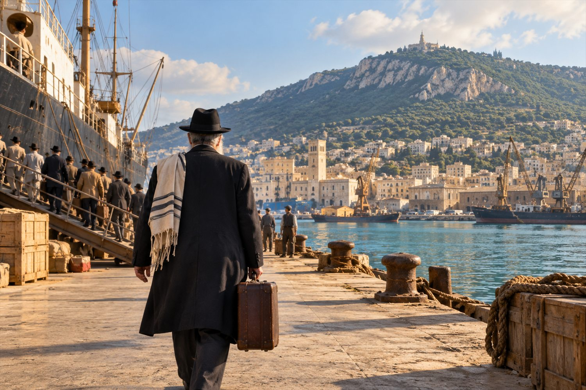
ר' יצחק אוחנה זצ"ל, מזקני רבני יהדות מרוקו, נולד במקנס שבמרוקו בשנת תרס"ח. אביו היה אב"ד מקנס, וחמיו הגאון ר' יעקב אלבז היה אב"ד קזבלנקה. בן 25 מינהו ר' רפאל ברדוגו כדיין בבית דינו, ור' יצחק הקים בה ישיבה. עלה לארץ ישראל בשנת תש"ח, ובשנת תשי"ד נתמנה לרבה של קרית שמונה. נפטר בט"ז בשבט תשנ"ב. (חמיו של הרב יעקב משה הלל שליט"א, ראש ישיבת "אהבת שלום")
כתב החתם סופר (תורת משה, שלח): המבין ויורד בדעתו לסוף קדושת ארץ ישראל וקדושת נפשו, ימסור נפשו וכל הונו רק לעלות ולראות את ארץ ישראל. אהבתו של רבי יצחק אוחנה זצ"ל לארץ ישראל, ארץ ה', לא ידעה גבולות. בשנת תש"ח, כשנודע ברחבי העולם שנפתחו שערי ארץ הקודש, עזב את ביתו החדש והיוקרתי במרוקו ואת עסקיו, מסרם ביד רבו שיטפל במכירתם, ולקח את אשתו ושמונת ילדיו הרכים עם חפצים מינימליים ויצא לארץ ישראל.
כשהגיעו לנמל בצרפת כדי להפליג, ראו שבמקום אונייה הביאו להם ספינת דייגים שלא היה בה מקום לחפציהם. הברירה היתה להמתין לאונייה אחרת, אך הוא לא ויתר והפליג בספינת הדייגים, בהשאירו את כל חפציו אצל קרובו בצרפת. הלה אחסנם במחסן עד שהתקלקלו ולא נשאר מהם כלום, וכך הגיע לארץ בערום וחוסר כל. משהגיע נפל מלוא קומתו ארצה, נשק לאבניה וחנן את עפרה.
כשנשאל היכן היה רוצה להתגורר, ענה בפשיטות: "בירושלים עיר הקודש". אמרו לו שזה בלתי אפשרי, שכן העיר מופגזת ויש סכנה להשתקע בה. ענה: "גורלי יהיה כגורל אחי היושבים בירושלים, מוכן אני למות עליה". ואכן עלה לירושלים, בעוד שכמעט כל חבריו שבאו עמו באונייה נשארו להתגורר בחיפה. (איש יהודי היה, עמ' 42)
בשנת תשי"ד נתבקש ר' יצחק לעלות לקרית שמונה ולשמש שם כרב העיר, שהיתה אז שממה רוחנית. פעולותיו התמקדו בעיקר בהכשרות ובחינוך: הוא נאבק נחרצות בבעלי אטליזים שסיפקו בשר שאינו כשר, ופעם אף עמד בפתח חנות והכריז שהיא מוכרת בשר טרֵפה; הקצב הרשע נטל סכין ורץ לדוקרו, ור' יצחק בגבורה פתח את בגדיו וצעק "דקור אותי" — עד שהקצב נרתע באימה. כן פעל להקים את החינוך העצמאי בעיר, ואירח בביתו מורות שהגיעו מרחוק, ופעמים ששילם מכיסו כאשר שכרן התעכב.
בספר הזכרונות של סר משה מונטיפיורי מובא, שבשנת תרכ"ו, בעת מגפה גדולה בירושלים מחמת העוני, הציע מונטיפיורי לעניי הארץ כסף כדי לצאת לחוץ לארץ. בין הבאים היתה אלמנה עניה כבת עשרים ושתיים, שבעלה מת במגפה. הציע לה ללכת לקרוביה האמידים באשכנז, אך היא קראה: "ה' זכני לשאוף את האוויר הטהור של ארץ אבותינו... ואיך אצא עתה ואקח את ילדי מעיר ציון? לא! טוב לי לגווע ברעב עם ילדי, בחונני את עפר העיר הקדושה, מלחיות בכל טוב בחוץ לארץ!" וכמעט כל העניים שהציע להם מונטיפיורי לצאת מהארץ ענוהו תשובה דומה. ("ספר הזכרונות", חלק ב, עמ' 112)
שנים מספר לאחר עלייתו ארצה של האדמו"ר ה'נתיבות שלום' זי"ע, הורע מאוד המצב הביטחוני, ואביו הריץ לו איגרת בהולה שיחזור לברנוביץ' עד יעבור זעם. השיב לו רבנו: "מוטב לו למות בארץ ישראל מאשר לחיות בחוצה לארץ באדמה טמאה". בסופו של דבר התברר שזה היה נס הצלתו, שכן כל משפחתו שנותרה בברנוביץ' נספתה בשואה. (מוסף המודיע)
ומסופר על האדמו"ר מסלונים ה'דברי שמואל' (אבי ה'בית אברהם'), שבביקורו בארץ ישראל ביקר במערת צדקיהו שבעיר העתיקה, שם נהגו המבקרים לקשור חבל לרגליהם למען לא יאבדו את דרכם. איתרע מזלם, ונשמט החבל מתחת רגליהם — ותחת לבכות על גורלם, החל הצדיק לפזז ולרקד על זכותו למות בארץ הקודש אהובת ליבו. עודו מרקד, נתפסה רגלו שוב בחבל הגואל, ותהי לו נפשו לפליטה. (שמואל בדורו)
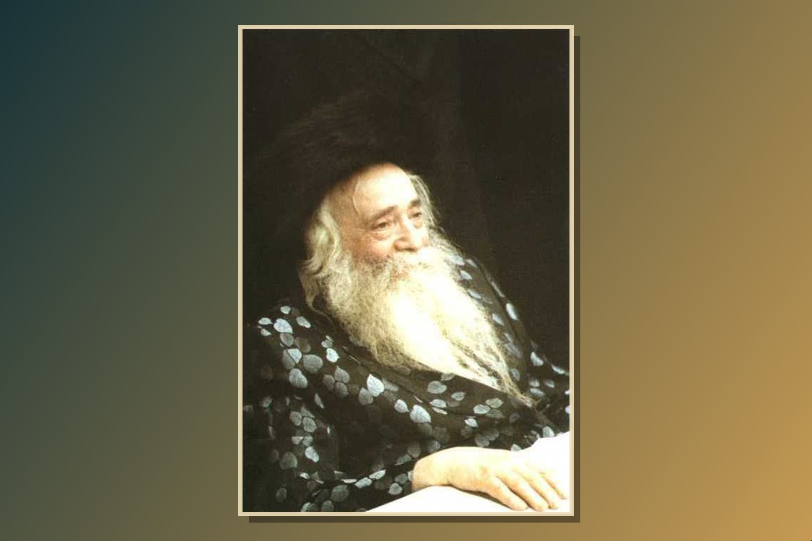
רבי יקותיאל יהודה הלברשטאם זצ"ל, האדמו"ר מצאנז-קלויזנבורג בעל ה'שפע חיים', נולד ברודניק שבגליציה בשנת תרס"ד. בשנת תרפ"ו נתמנה כאב"ד בקהל ספרדים בעיר קלויזנבורג שברומניה. בשואה עבר שבעה מדורי גיהינום, ואיבד את אשתו ואת אחד עשר ילדיו. במחנות ההשמדה פעל רבות בכוח אמונתו האיתנה לחזק את הלבבות. מיד לאחר השואה החל להקים מחדש את ההריסות, הפיח רוח חדשה בניצולי השואה והקים רשת ישיבות ומוסדות תורה ל"שארית הפליטה" במחנות העקורים.
בשנת תש"ז הגיע לארצות הברית, שם החל לבנות מחדש את חסידות צאנז. בשנת תשט"ז ביקר בארץ ישראל והניח את אבן הפינה ל'קרית צאנז' בנתניה, שם התיישב בשנת תש"ך עם עלייתו ארצה. כמו כן הקים את קרית צאנז בירושלים, ואת המרכז הרפואי לניאדו בנתניה. נפטר בקרית צאנז בנתניה בט' בתמוז תשנ"ד.
חיבה יתרה חיבב רבי יקותיאל יהודה הלברשטאם זצ"ל — האדמו"ר מצאנז — את ארץ ישראל, ושמח מאוד לזכות לבנותה וליישבה. את קרית צאנז בנתניה הוא בנה על מנת להרחיב את גבולות הארץ, ומשום כך רצה להקימה דווקא במקום בו לא היה עדיין יישוב יהודי, ולא בירושלים. אהבה זו לארץ חמדה ינק עוד מבית אביו, האדמו"ר צבי הירש מרודניק זי"ע: בכל שנה היו שולחים לו שמן זית לחנוכה מארץ ישראל, ואף הילדים כשנגעו במאכל שהוכן עם השמן הזה, הרגישו כאילו נגעו בספר קודש. לקראת ט"ו בשבט היה עומד ומצפה שיביאו לו פירות מארץ ישראל, ונוגע בהם בפחד ובאימה. (שפע חיים, חלק ב, פרשת כי תבוא)
בחודש תשרי תשט"ו התכונן רבינו זי"ע לעלות ולהיראות בארצנו הקדושה. מקורביו הרגישו בימים הנוראים סערה נפשית ושינויים יוצאים מן הכלל, שהתפרשו כהכנה גדולה לפני המסע. "מכיוון שעומד לנסוע לארצנו הקדושה", אמרו החסידים איש לרעהו, "וכל מחשבות ליבו תקועות שמה, כמוהו כאחד השרוי כבר בכל רמ"ח ושס"ה בארץ ישראל".
קרוב לשעת חצות הלילה, אור ליום חמישי כ"ב בחשוון, המריא המטוס ישר לארץ ישראל. רבינו זי"ע ישב כל הדרך אפוף להבות קודש, עיניו יורדות פלגי דמעה, כולו רועד מהתרגשות, ושפתותיו רוחשות בעל פה את פיוטי הגעגועים מקינות תשעה באב: "ציון הלא תשאלי..." "ציון עטרת צבי..." הורגש כאילו מלאכי מרום מלווים אותו כשעומד להיכנס בארץ השכינה.
ברדתו מכבש המטוס בבואו להתיישב בארץ הקודש, אמר רבינו זי"ע: "זהו היום המאושר בחיי".
בימי ביקורו הראשון בארצנו הקדושה, תר רבינו זי"ע את הארץ לארכה ולרוחבה, מחפש מקום מתאים ורחב ידיים בו יוכל להשתקע ולכונן את קרית צאנז כפי שרקם בחזונו. משאת נפשו היתה להציב "גבול אלמנה" — להעלות לכאן יהודים מתפוצות הגולה, ולחדש בקריה זו את הווי חסידות צאנז כבימי קדם. כאשר פנו אליו מירושלים שיבוא ויכונן בה את קרייתו, דחה הרבי את הרעיון: "ירושלים יש בה ברוך השם קדושה יתרה ותורה בשפע, בעוד אני רוצה להוסיף בארץ ישראל עיר חדשה, אשר עם הקמתה תגדל הקדושה ויתרבה אור התורה".
לאחר שהחליט על השטח בעיר נתניה, ייפה את כוחם של חברי הוועד לרכוש את המגרשים בשמו ובשליחותו, בכסף מלא, וביקש שיגמרו את העסקה ללא דיחוי. לימים הזכיר בשיחה את דברי רבנו בחיי (פרשת חיי שרה), המצביע על כך שרוב שטחי ארצנו הקדושה נכבשו בידי ישראל בחרב, אולם את השטחים המעולים ביותר קנו בכסף מלא: מערת המכפלה, הר המוריה (מקום בית המקדש), והר גריזים והר עיבל. מכאן, הוסיף הרבי, שכל אדמה המיועדת למלא תפקיד רוחני בחיי עמנו יש לקנותה בכסף מלא דווקא, ולא לקבלה חינם. הבשורה על השלמת הרכישה נתקבלה בבית רבינו בשמחה ובצהלה, וביום כ"א באדר תשט"ז זכה להניח בעצמו אבן פינה לקרית צאנז.
במשא שהשמיע בטקס הנחת אבן הפינה סיפר, כי ערב נסיעתו ארצה שאלו אותו רבים בארה"ב מדוע הוא נוסע לארץ ישראל בשעה שהמצב המדיני והביטחוני שלה כה קשה. הרבי הצביע על כך שמן השמים סיבבו בהשגחה פרטית נפלאה שהנחת אבן הפינה תיפול בדיוק ביום שמלאו מאה ושבעים שנה מהסתלקותו של הנועם אלימלך זי"ע, שהבטיח בשעתו שכבר ביטל מבני ישראל את גזירת חבלי משיח. וכשעמד עלינו היטלר ימ"ש, תמהו רבים: איה הבטחתו? "סבורני", הטעים בקול נרגש, "שהבטחתו של הרבי ר' אלימלך זי"ע התייחסה לשארית ישראל פה בארצנו הקדושה". נקודת השיא בדבריו היתה קריאתו הגדולה לכל החרדים בעולם שיעלו ויבואו ארצה להתנחל בה: "מחויב כל יהודי באשר הוא לקיים מצות ישוב ארץ ישראל בגופו ולעלות הנה — כה נכין את עצמנו בהכנה רבה לדורו של משיח!"
בשנים הבאות השתדל לחגוג את י"ט בכסלו — היום שבו יצא בדרכו לישיבת קבע בארץ ישראל — כיום טוב במקצת. "הסתפקתי", אמר, "אימתי לעשות שמחה — האם ביום שיצאתי מאמריקה, או למחרתו ביום שהגעתי לארצנו הקדושה? באתי לידי מסקנה שראוי לנו לעשות השמחה ביום י"ט בכסלו, כי עיקר השמחה היא שיצאנו משם". והוסיף ודיבר בהתלהבות: "אף היום, כשאנו יושבים פה שנה שלמה, אינני משיג לגמרי גודל מעלת ארצנו הקדושה... ומצינו לרבינו עובדיה מברטנורא ז"ל שחרף נפשו בסכנה וכתת רגליו שלוש שנים... וכשהגיעו לחופי הארץ פשטו מנעליהם ונשקו את עפרה — כל זאת מפני שקדושה נמשכת אל קדושה".
ר' שלמה אונגר זצ"ל סיפר: כאשר היה בחתונה בקרית צאנז בנתניה, התיישב ליד האדמו"ר, והרבי לקח כמה פירות מהצלחת ואמר לו: "תסתכל על הפירות הללו, פירות ארץ ישראל, כמה יפים הם, כמה טעימים הם, כמה ערבים הם. הייתי בחוץ לארץ", הוסיף, "וגם שם היו פירות יפים, אבל לא היו טעימים כמו הפירות הללו של הארץ הקדושה". כשדמעות בעיניו אמר הרבי, שלמרות ההסתר הגדול בו אנו נמצאים, הותיר הקב"ה עדיין טעם בפירות ארץ ישראל. (עלינו לשבח, דברים ב, עמ' שעט)
פעם אחת נסע האדמו"ר מצאנז לרופא באמריקה, ועברו דרך הבניינים הגבוהים במנהטן, ורצו להראותם לו. נענה ואמר, שכשבא לגור באמריקה נדר שלא לראות ולא ליהנות מהבתים היפים שם: "בתים יפים ברצוני לראות רק בארץ ישראל!" ואכן תמיד כשנסעו דרך מנהטן לא הרים עיניו להתבונן בבנייני הענק שמכל העולם באו לראותם. (מדברי האדמו"ר מצאנז שליט"א על אביו, "בצילא דמהימנותא", ויקרא תשס"ה) גם בארץ ישראל עצמה, כשבחר לבנות את ביתו בהרחבה ובהידור, הסבירו תלמידיו כי לא היה בכך תענוג גשמי כלל, אלא חיבוב וקיום מצוות ישוב ארץ ישראל בהידורה — כשם שמצווה בסוכה נאה, כך מצווה בדירה נאה בארץ ישראל דווקא, ומטעם זה גם סירב מכל וכל לבנות לו בית מפואר בחוץ לארץ, והסתפק שם בדירה פשוטה ביותר. (הדרת ישראל, חלק ב, עמ' כו-כז)
רבי שלמה זלמן אויערבאך נולד בירושלים בשנת תר"ע לאביו רבי חיים יהודה לייב, מייסד ישיבת המקובלים "שער השמים", ונקרא על שם אבי אמו הדגול ר' שלמה זלמן פרוש, איש ירושלים. בבחרותו למד בישיבת "עץ חיים" בירושלים. שימש כראש ישיבת "קול תורה" והעמיד תלמידים רבים המשמשים כרבנים ומרביצי תורה. הוכר כפוסק גדול על ידי כל לומדי התורה לזרמיהם, ובפסקיו התייחס גם למכשור טכנולוגי מודרני — בגיל 22 הוציא לאור את ספרו "מאורי אש" בענייני חשמל בשבת. נלב"ע כ' אדר תשנ"ה.
סבו, ר' שלמה זלמן פרוש, היה מבוניה של ירושלים המתחדשת וממקימי גמ"ח שערי חסד, לאחר שעלה ארצה מאירופה בגיל 10 עם משפחתו, בשנת תרט"ו. שם המשפחה "פרוש" דבק בה על שום שאבי המשפחה, ר' נפתלי צבי, פרש קודם עלייתו מביתו במשך שנה שלמה, עסק בתורה בהתבודדות וצם משבת לשבת — כדי שיהיה ראוי למעלת וקדושת ארץ ישראל!
בדרכה ארצה עלתה המשפחה הצעירה על גמל מיפו לירושלים: האם ובן אחד בארגז עץ שנתלה מצד אחד של הגמל, והאב ובנו שלמה זלמן בארגז שבצדו השני. הבחין בעל הגמל שהוא נוטה על צדו — האב היה רזה וצנום להחריד בשל הצומות שערך קודם עלייתו, ולכן הארגז הנגדי היה כבד יותר. כדי לאזן, הניח הערבי אבנים גדולות בארגז האב ובנו. לצאצאיו היה ר' שלמה זלמן פרוש מראה את הצלקת שנותרה ברגלו מאותו מסע, משום שאחת האבנים נתחככה ברגלו לאורך כל הדרך מיפו לירושלים — צלקת מן האש היוקדת של אהבת קדושת ארץ ישראל! (התורה המשמחת, עמ' 11)
אמר עליו רבי אביגדור נבנצל שליט"א: "יתכן שמשום שעמל בעמוד העבודה, זכה שלא יצא אף פעם לחוץ לארץ! כיצחק אבינו, עמוד העבודה, שלא יצא מעולם את הארץ... הרב נשם רק את אווירה המחכים של ארץ ישראל, ובעיקר אווירא דירושלים!" (התורה המשמחת, עמ' 203)
מספר ר' חיים סויסה, תלמידו ומקורבו: תלמיד ישיבת "קול תורה" עמד להתחתן בבאר שבע, ומאוד רצה שהרב יהיה מסדר החופה. באותה תקופה הרב כבר לא יצא לשמחות תלמידים מחוץ לירושלים, אך החתן הפציר, ולבסוף בדקתי הצעה שהרב יגיע במסוק. בררתי מחיר ונקודות המראה ונחיתה, ופניתי לשאול את הרב. הרב שמע, אחז בידי, ובחכמתו בחר לסרב בנימוק שקשה היה להשיב עליו:
"ר' חיים: אני יליד ירושלים. וברוך ה', שמעולם לא עזבו רגליי את אדמת הארץ! אפילו לא עליתי על אונייה או מטוס בתחומי ארץ ישראל... תמיד הייתי על אדמת הקודש". (אורו של עולם, עמ' 175)
מספר ר' אבי דביולר: באתי לבקר בארץ ישראל בשנת תשכ"ז, וזכיתי לחוש אהבה כלפיה, ונותר בי חלום לעלות. אולם אשתי היתה מוכנה לבקר בארץ, ואפילו לעתים תכופות, אבל לא לעלות, בשל חוסר הוודאות ממה נתפרנס. בשנת תשמ"ז השתתפתי בסיור בארץ, ותוך כדי כך נזכרתי ששמעתי על גדולתו של הגרש"ז, והחלטתי להתייעץ עמו. פגשתיו במקרה במסדרון בית הכנסת הגר"א, וסיפרתי לו על אשתי, "אישה פרקטית מאוד" שכל הזמן יש לה ספקות וחששות.
"איך משכנעים מתוך אהבה, לא מתוך ויכוחים?"
הרב חייך ואמר: "הרצון שלך לעלות לארץ הוא דבר טוב מאוד. השאלה היא רק איך עושים זאת. א. לפני שבני ישראל נכנסו לארץ, כתוב בתורה שהם הרגו את 'מלך חשבון' — כלומר, כדי לעלות ארצה צריך 'להרוג' את כל ה'חשבונות', כי אם עושים רק חשבון הגיוני וקר, תמיד יהיה חשש לעלות. ב. החששות של אשתך מעידים על חוסר ביטחון, ועניין זה קשור אליך — כשבעל אוהב את אשתו, היא מרגישה יציבות. אם אתה רוצה שדבריך יתקבלו, אל תעשה זאת בלחץ ולא מתוך ויכוחים, אלא רק מתוך רגש, מתוך חיבה ואהבה".
חזרתי לאמריקה, ומאז שידרתי בבית את תשוקתי לעלות בדרך של רגש וכיסופים — כשמישהו היה בא מישראל הייתי מביט בו בעיניים מעריצות, ובברכת המזון הייתי אומר "על שהנחלת לאבותינו ארץ חמדה טובה ורחבה" ובאמת כמעט בוכה. אשתי ידעה היטב שאלה אינן "הצגות". יום אחד בשנת תש"ן אמרה לי: "אתה מכיר את הסיפור על ר' עקיבא שראה טיפות שעשו חור בסלע? זה מה שעשית לי, לאט לאט..." — וכך זכינו לעלות לארץ ישראל. (אורו של עולם, עמ' 28)
הגרש"ז היה אומר: יתכן שהטעם שאין מברכים על קיום מצוות ישוב ארץ ישראל, הוא כדי שלא ייראה שישיבתנו בה היא כעול עלינו מפני שנצטווינו על כך, אלא אדרבה שמחים ומשתוקקים אנו לישב על אדמת הקודש, וכלשון הגר"א ז"ל באיגרתו — "אשר עליונים ותחתונים מתאווים לשכון בה". (הליכות שלמה, מועדים ב, פרק ט, הערה 224)
"מה עשתה לך ארץ ישראל?!"
נזכר מר ר.: בילדותי הייתי עוזר לאבי בהסעת מוצרים ללקוחות. פעם הרב הצטרף לרכבנו. באמצע הנסיעה ראינו שני נהגים לפנינו מדברים ביניהם ומעכבים את התנועה. אבי הגיב: "חוצפה ארץ-ישראלית"... איני יכול לשכוח את הזעזוע שחלף בגוף הרב, ממש כאילו פגעו בבנו יחידו. הוא אמר באיטיות: "אני מסכים שזו חוצפה — אבל מה עשתה לך ארץ ישראל?! מה היא אשמה?!" (אורו של עולם, עמ' 363)
סיפר בנו הג"ר יעקב אויערבך שליט"א, שאחר אירוסיו דיבר חותנו עם אביו הגרש"ז, ואמר שברצונו לערוך את החתונה בלונדון, מקום מגורי הכלה. הגרש"ז לא הביע דעתו, רק אמר שהוא עצמו אינו יוצא מארץ ישראל — גם לצורך נישואי בנו. מששמע המחותן את הדברים, ביטל את תוכניתו, והחתונה התקיימה בארץ ישראל. וכן, כשהוצרך לעבור ניתוח קשה ומסובך בראשו, גברו עליו ההפצרות לעשות זאת בחוץ לארץ — אך סירב ואמר: "אם יש רופא מנתח אחד בארץ ישראל, אינני יוצא לחוץ לארץ".
מספר בנו: לעיתים הייתי רוצה להכניס אליו אנשים בשעה שבירך, כדי שיראו איך צריך לברך ברכת המזון! הוא היה אומר באופן מוחשי כל כך "נודה לך ה' אלוקינו, על שהנחלת לאבותינו ארץ חמדה טובה ורחבה" עד שהיה נדמה לי שזה נוסח שלא שמעתי מעולם... פעם הרגישו שבאמצע ברכת "נודה לך", לפני שהגיע ל"ועל הכל", חזר ל"נודה לך". משסיים הסביר לשומעים התמהים: "כשברכתי את ה'נודה לך' הראשון האמירה היתה חסרת כוונה, ומכיוון שעניינו הודאה על ארץ ישראל, הרי שבלי כוונת הלב כלל לא אמרתי נודה לך".
וסיפר בנו עוד, שפעמים רבות במשך השנה, כשלא היה איש בבית זולתם, שמע את הגרש"ז כופל בברכת המזון את המילים "והוא יוליכנו קוממיות לארצנו" כמה וכמה פעמים, בהתעוררות רבה ובערגת הנפש. (הליכות שלמה, מועדים ב, פרק יד, הערה 11)
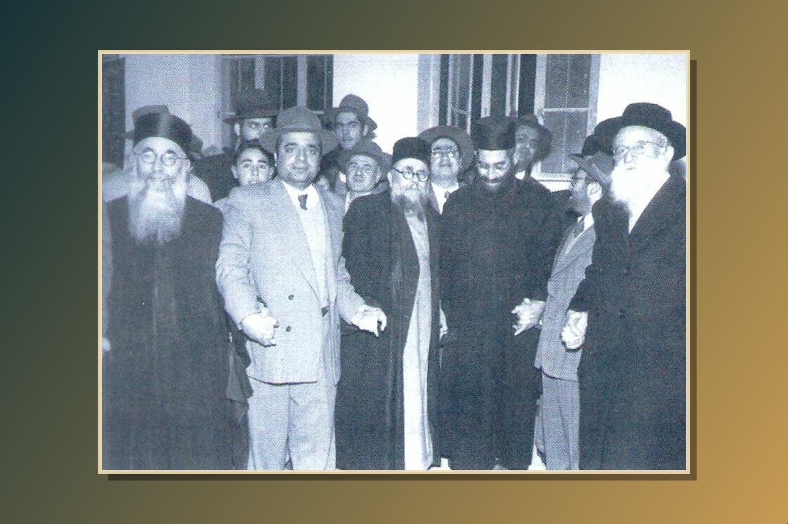
הרב בן-ציון אבא שאול נולד בשנת תרפ"ד בירושלים למשפחה יוצאת פרס. למד בישיבת פורת יוסף אצל הרב יעקב עדס, הרב צדקה חוצין והרב עזרא עטייה, יחד עם הרב עובדיה יוסף והרב מרדכי אליהו ועוד מגדולי הדור. לאחר שנים מונה לר"מ בישיבה, ואחר כך לראש ישיבת פורת יוסף עם הרב יהודה צדקה. נחשב פוסק חשוב, ודרכו היתה לפסוק על פי ה'בן איש חי'. לעת זקנתו כתב את סדרת ספריו 'אור לציון'. נפטר בירושלים בי"א תמוז תשנ"ח.
רבי בן ציון אבא שאול זצ"ל היה מקפיד על דיבור מעודן, וכן הקפיד שלא יצא ממעשיו אפילו רמז קל של חוסר שמחה ואהבה לארץ ישראל.
"וזו הוצאת דיבה על הארץ!"
כשהתאושש רבנו ממחלתו, בעוד ידו משותקת וגופו דווי, כבר חידש שיעוריו בישיבה. ביום חורף קר אמר אחד התלמידים: "הרב, הקור נורא, ארכוס לרב את הכפתורים!" השיב רבינו: "לא! ... אתה לא אמרת שקר לך או שקר לי, אמרת שהקור נורא — וזו הוצאת דיבה על הארץ, ארץ הקודש. אני מעולם לא אמרתי שחם או קר בחוץ. ארץ ישראל נפלאה, ואין כאווירה, וירושלים ביחוד, שעליה נאמר 'יפה נוף משוש כל הארץ הר ציון'. תוכל לומר שחם לך או קר לך, אך אל תאמר קר בחוץ, ובוודאי שלא קור נורא!" (אור לציון, חלק ב, פרק מח, עמ' 169)
פועל הוזמן לעשות עבודות בית בביתו, ומטבע הדברים התמלאה הרצפה אבק. אך נכנס רבנו, חלץ נעליו והתהלך באנפילאות שספחו אבק. נשאל על כך, וענה: "שנינו שרבותינו נשקו את עפר הארץ. כמה קדושה יש באדמתה, ורצוני לשאוב קדושה זו!" וכשנסע לחיזוק הדת באיראן וראה עושר בל יאמן ופאר מנקר עיניים, הפטיר בחזרו: "האבנים הישנות והעתיקות של שכונת 'בית ישראל' בירושלים, שוות יותר מכל כספה וזהבה של איראן!"
חידש רבנו את אמירת השיעורים, ארבע שעות בעיון מעמיק. בסיומן עלו התלמידים לבית המדרש, ורבנו נשאר לבדו. תלמיד שידע שהשיעור מתיש את כוחו רצה להביא לו שתייה, פתח את הדלת בחשש, וראה את רבנו גוחן על הגמרא וגומע בשקיקה דף אחר דף. ראה רבנו ואמר: "מבין אתה, אוויר ארץ העמים מטמא, וצריך אני להשיב את הטהרה — ואין טהרה כדף גמרא!"...
בשכונה עבד פועל ניקיון מטעם העירייה, וגרף את הפסולת. אחד התושבים סבר שהוא עושה מלאכתו בשטחיות, והאשימו בהזנחה. שמע הפועל, זקף קומתו והכריז: "אני עושה מלאכתי נאמנה! חכם בן ציון מקדים לי שלום ומשבח באוזני את עבודתי. הוא סיפר לי שחכמים גדולים טרחו לנקות הדרכים כדי ליפות את ארץ ישראל, ואשרי חלקי שאני הולך בדרכם, כך אמר — ואתה בא בטענות?!" (הגדה של פסח, "יגילו במלכם")
הרב שמשון דוד פינקוס זצ"ל נולד בארצות הברית בכ"ז באב תש"ד. בצעירותו למד בישיבת בית התלמוד בניו יורק, ובהמשך עלה לארץ ישראל ללמוד בישיבת בריסק אצל הרב יוסף דב סולובייצ'יק. לאחר נישואיו גר בבני ברק ואחר כך בתפרח, כיהן כמשגיח בישיבת אופקים ומאוחר יותר נעשה ראש ישיבה בישיבת ירוחם. לבקשת הרב יעקב ישראל קניבסקי והרב אלעזר מנחם מן שך עבר לגור באופקים וכיהן שם כרב למעלה מעשרים שנה. היה דרשן בולט, והדגיש בדרשותיו את חשיבות הרגשת הקרבה להקב"ה. נפטר בארץ ישראל בי"ב בניסן תשס"א.
מסופר על הרב שמשון פינקוס זצ"ל, שכאשר היה בחור ישיבה בישיבת בריסק, הציע לו קרוב משפחה הצעת שידוך מארה"ב, עם משפחה תורנית — אלא שהתנאי היה כי בני הזוג יתגוררו בחוץ לארץ. ההצעה נראתה הגונה מכל הבחינות, אולם עם התקדמותה הבין רבי שמשון כי אם ייגמר העניין בכי טוב ייאלץ להשתקע בחו"ל לכל ימי חייו, והדבר הסב לו עגמת נפש רבה.
"רצוני שיבטיחו לי..."
נכנס לדודו שהיה מעורב בשידוך, ובפיו בקשה בלתי שגרתית: "רצוני שיבטיחו לי, שגם אם אתגורר בארץ העמים כל ימי חיי, הרי לכל הפחות לאחר מלאות ימי ושנותי אקבר בארץ ישראל"... למעשה ירדה אותה הצעה מעל הפרק, וכעבור זמן זכה להשתדך עם בת ארץ ישראל ונותר לקבוע משכנו בארץ הקודש. רעייתו ע"ה מעולם לא יצאה לחוץ לארץ, אף שהזדמנויות לכך היו רבות מספור. (השמש בגבורתו, חלק א, עמ' 182)
ראה זה פלא: בכל ההבטחות שהבטיח הקב"ה לאבות מוזכר נושא אחד ויחיד — הבטחת ארץ ישראל, ולא נזכרה אף פעם שום הבטחה על נתינת תורה ומצוות. ולכאורה זה פלא גדול: איך לא הזכיר את עיקר העיקרים, התורה? אנחנו כבר אלפיים שנה דבקים בהשי"ת גם בלי ארץ ישראל, ואילו רגע אחד בלי תורה — פשיטא שנתפרדה החבילה!
אבל הביאור: כמו בנישואין, מה אומר החתן לכלה? "ביחד נבנה בית". ובעצם ישנה אפשרות לחיות כל חייהם בבית מלון ולגדל שם ילדים ואף נכדים — אם כן, מה פשר ברכה זו? אלא ש"בית" מגדיר את עניין הנישואין: הדבר החשוב ביותר בחיי הנישואין הוא הפרטיות, וה"בית" מבטא פרטיות זו. כך גם — הדבר שבעצם מגדיר את הקשר בינינו לבין הרבש"ע הוא ארץ ישראל! ודאי שהמהות והתוכן של ה"אידישקייט" הן התורה והמצוות, אך האווירה, הסביבה שמגדירה את אותו קשר מופלא, טמונה אך ורק בארץ ישראל בכלל, ובבית המקדש בפרט! (תפארתה של תורה, עמ' ג)
הרב יצחק זילבר נולד בתרע"ז בקאזאן שברוסיה, לרב העיר רבי בן-ציון זילבר. אביו לימדו בעצמו את מקצועות החול לצד תנ"ך, משנה ותלמוד, כדי להימנע מחילול שבת בבית הספר. בשבט תשל"ב עלה לארץ ישראל והשתכן בסנהדריה בירושלים. יסד את ישיבת "שבי גולה" ואת ארגון "תולדות ישורון" לקירוב יוצאי ברית המועצות לתורת ישראל. חיבר בברית המועצות את הספר "ולהבה לא תבער בך", ובסוף חייו סיפר את מסכת חייו בספר "להישאר יהודי". נלב"ע ח' באב תשס"ד.
סיפר הצדיק רבי יצחק זילבר זצ"ל: המעשה הראשון העולה במחשבתי מתקופת ילדותי כמעט המיט עלינו אסון. הייתי ילד קטן כששמעתי שבין העם היהודי לה' קיימת ברית, המובטחת בפסוק "ונתתי לך ולזרעך אחריך את ארץ מגוריך... ארץ כנען לאחוזת עולם". "האם זה אומר שגם אני אחיה אי-פעם בארץ ישראל?" שאלתי בלהט. בשנות ה-20 ברוסיה הקומוניסטית נראה הדבר בלתי מציאותי — ובכל זאת ענו לי הורי מתוך אמונה יוקדת: "כן!"
החלטתי לעשות מעשה. חשבתי בתמימות ילדותית שלהורי יש כנראה נימוקים המעכבים אותם, אך לי אין כל סיבה להתמהמה. פניתי למשרד החוץ וביקשתי את המנהל: "הרשה לי בבקשה לנסוע לסבא שלי בליטא". "מדוע רוצה אתה לנסוע לליטא, ילד?" שאל המנהל. עניתי בתום לב: "אני צריך לנסוע לפלסטינה, אך מכיוון שאסור לצאת לשם מרוסיה, ברצוני לנסוע לליטא, ומשם — לפלסטינה". "באמת? מעניין מאוד, ילד. באיזה בית ספר אתה לומד? על חינוך כזה צריך לכלוא את הוריך בבית סוהר!" — הוא דיבר בקור רוח מקפיא, ואני הרחתי בחושי את הסכנה. איני זוכר כיצד הצלחתי לברוח משם.
רק לאחר שנים רבות התבררה לי הסכנה הגדולה אליה הכנסתי את אבי ואת אמי — רק בנס הם ניצלו ממאסר. בן שמונה שנים בלבד הייתי, ילד קטן ותמים. (מתוך "להישאר יהודי", עמ' 10-12)
ארץ ישראל היתה גן פורח, האזור הפורה בעולם. ההיסטוריון יוסיפוס פלביוס מתאר את הגליל בימי הבית השני: "הארץ פוריה מאוד, משופעת במרעה, עשירה בצמחייה... מספר ערים וכפרים בה כמאתיים, ובעקבות פוריותה הנפלאה, האוכלוסייה כאן מרובה... מתאים היה לכנות את הארץ אשר נותנת בשפע כזה פירות, גן עדן עלי אדמות". במשך כמעט 2,000 שנה, בעודה תחת שלטון זרים, היתה ארץ ישראל לשממה — עד שכתב המזרחן הצרפתי ק. וולניי, שביקר בה בסוף המאה ה-18: "לא ראיתי אלא שממה והעדר אנשים... מה סיבת קללת שמים הרובצת עליה?"
והנה, עם תחילת ההתיישבות היהודית, הארץ הולכת והופכת ממדבר לגן רווה, ולבעליה היא נותנת פירות נפלאים ויבולי שיא. התלמוד אומר שזה סימן קרבת הימים הטובים. (מתוך "ולהבה לא תבער בך", מעמ' 66 ואילך)
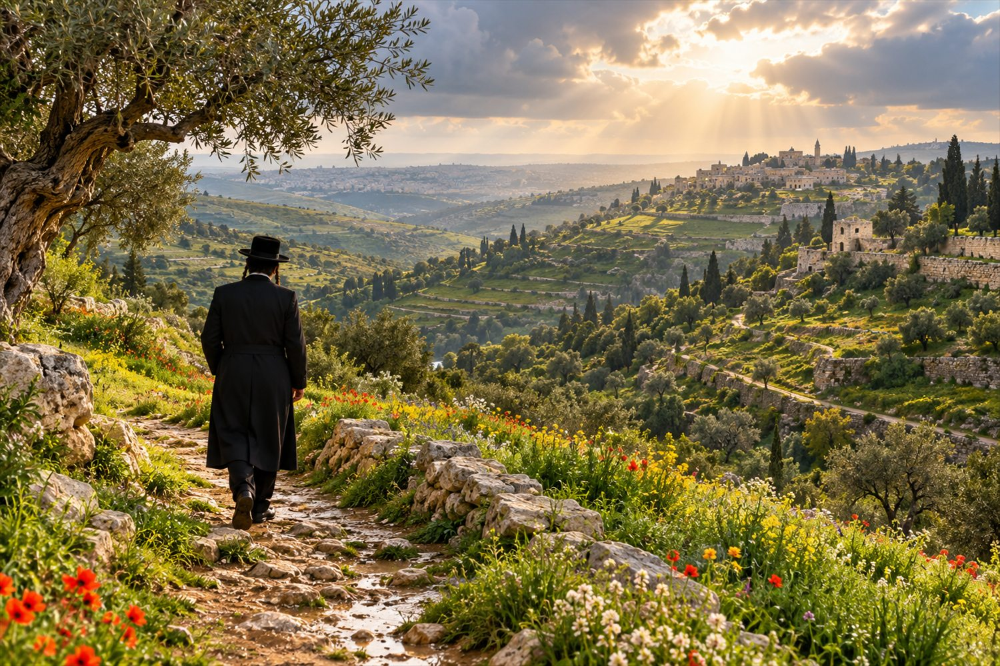
רבי שלום נח ברזובסקי נולד בשנת תרע"א לרבי משה אברהם ברזובסקי, ראש הקהילה בברנוביץ'. למד בישיבת תורת חסד בברנוביץ', ולאחר פטירת רבי אברהם וינברג ("בית אברהם"), אדמו"ר סלונים, מונה לכתוב את תורת רבו. בשנת תרצ"ה עלה ארצה והתגורר בטבריה, ומסר שיעורים בישיבת "אור תורה". בתחילת חשוון תש"ב הקים את ישיבת 'בית אברהם' בירושלים ועמד בראשה כארבעים שנה, עד שהתמנה לאדמו"ר בשנת תשמ"א. נפטר בז' באב תש"ס. שיחותיו וחיבוריו כונסו בסדרת הספרים 'נתיבות שלום'.
כ"ק האדמו"ר מסלונים זי"ע בעל ה'נתיבות שלום' אהב אהבה רבה את הארץ הקדושה, "ארץ אשר עיני ה' אלוקיך בה מראשית השנה עד אחרית שנה". כל ימי חייו דרש וחקר בענייניה, ולא פסק מלספר בשבח מעלותיה הרוחניות. מעת שזכה לחונן את עפרה ולהתיישב על אדמתה, ביום ז' אדר תרצ"ה, לא עזב אותה לעולם — גם כשהפצירו בו לצאת לחו"ל מטעמי בריאות או לשמחות משפחה, לא אבה בשום אופן.
כבר בהיותו ילד בן עשר חלם שיום יבוא ויעלה לארץ הקודש, גם אם ייאלץ לישון ברחוב — העיקר לגור בה. שנים מספר לאחר עלייתו, כשהורע המצב הביטחוני, הריץ לו אביו איגרת בהולה שיחזור לברנוביץ' עד יעבור זעם. השיב לו רבנו: "מוטב לו למות בארץ ישראל מאשר לחיות בחוצה לארץ באדמה טמאה" — ואמנם, כל משפחתו שנותרה בברנוביץ' נספתה בשואה, ודווקא שהייתו בארץ ישראל הצילה את חייו.
בהיותו אברך צעיר שהה במירון להתפלל על ציון הרשב"י, והפסיד את ההסעה חזרה לטבריה. נותר לעמוד בודד תחת אילן, בזמן שהיה חשש לפרעות ערביי המקום, והפחד היה נורא. סיפר על מה שעבר עליו: "חשבתי לעצמי: הרי כמה אבי היה חפץ לשהות בארץ ישראל, גם במצב שכזה. אם כן, אני, שבחסדי השי"ת זוכה לכך — כמה יש לי להיות מאושר על חלקי". ומיד עברו הפחדים והחששות כלא היו.
ליחידים שנאלצו לצאת מהארץ, או לבחורי הישיבה שהוריהם התגוררו בחו"ל ובאו להיפרד ממנו קודם צאתם לחגים, היה מעודדם על חיבת הארץ ומזהירם לבל יסיחו דעתם ממנה. לאחד הבחורים אמר: "הולך אתה לשהות תקופה בחו"ל — אל תשכח מהארץ כל ימי היותך שם, ותשתדל בכל יום לחשוב על ארץ הקודש וירושלים". וכשבא אחד מאנשי שלומו לשאול על נסיעה לשמחת נישואי אחיו בחו"ל, אמר לו שצריך לקחת עמו "אויר ארץ ישראל": "כל זמן שמרגיש שהאדמה 'בוערת' מתחת רגליו בעת שהותו שם, סימן שעדיין שורר בקרבו אוויר ארץ ישראל; אך אם ירגיש שלא היה מצטער לשהות עוד שבוע בחו"ל — סימן שאיבד את האוויר הקדוש".
רבינו היה נוהג לחזור על המעשה המובא בילקוט שמעוני (פרשת ראה) בשני התנאים, רבי אלעזר בן שמוע ורבי יוחנן הסנדלר, שהלכו ללמוד תורה מרבי יהודה בן בתירא בנציבין. כשהגיעו לצידון, זכרו את ארץ ישראל, וזקפו עיניהם וזלגו דמעותיהם, וקרעו את בגדיהם, ואמרו: "ישיבת ארץ ישראל שקולה כנגד כל המצוות שבתורה" — וחזרו למקומם. ותמה רבינו: מה פשר "זכרו את ארץ ישראל", הרי עדיין היו בה ולא יצאו ממנה? אלא ביאר: ברגע הפרידה, כשהיו צריכים לצאת מהארץ, נעמד כנגד עיניהם כל היופי הנפלא והפנימי שלה — ואף שבררו את ההלכה שמותר לצאת ללמוד תורה, לא היו מסוגלים לעזוב.
בשבת זכור תשמ"ה, במלאות חמישים שנה לעלייתו, אמר: "בעומדנו עתה במלאות חמישים שנה לעלותי לארץ הקודש, במקהלים אברך את ה' על חסדו אשר עמי... מודה אני לפניך ה' אלקי ואלקי אבותי על כל החסד אשר עשית עמדי שזכינו לישב בארץ ישראל, ואשר אתה עתיד לעשות עמי — ותחזינה עינינו בשובך לציון ברחמים במהרה בימינו".
הרב שלמה וולבה נולד בברלין בשנת תרע"ד. עבר ללמוד בישיבת מיר, שם כיהן כמשגיח הרב ירוחם ליבוביץ, וחיבר עליו את הספר "אדם ביקר". בחשוון תש"ז עלה לארץ, לאחר שנישא לבתו של הרב אברהם גרודזינסקי, משגיח בישיבת סלבודקה. בחשוון תש"ט הקים את ישיבת באר יעקב, לאחר התייעצות עם החזון איש, וכיהן בה כמשגיח. בתשל"ז לאחר מלחמת ששת הימים החל בפעילות חזרה בתשובה מקיפה, ובתשמ"ב עבר לירושלים והקים את בית המוסר. נפטר בט"ז בניסן תשס"ה.
הגיעה עת הבירור איפה באמת מקננת חיבת הארץ: עיני קיבוצים רבים כלות אל בניהם שנסעו לחו"ל להשתלמות, בחרו להם נשים והתיישבו בניכר — הכל השליכו מאחורי גיוום ובנו חייהם שם! ואילו בני הישיבות האמונים על חיבת הקודש של ארץ ישראל, אינם רואים לפניהם שום מגמה אחרת זולת אחת ויחידה: בניין התורה בארץ הקודש, ללא קריירה גדולה, ללא "השתלמות בחו"ל" — אך ורק תורת ארץ ישראל!
כתב הגר"ש וולבה זצ"ל (עלי שור, חלק א, עמ' רפד): "מהי סגולתה הרוחנית של ארץ ישראל? נראה כי בה יותר קל מאשר בכל מקום אחר בעולם לקשור קשר טבעי ואמיץ עם הבורא יתברך. אין אדם זקוק למחשבות וחקירות רבות בכדי להתקרב אל הבורא, כי פשטות החיים בכוחה להביא לידי כך, למי שזוכה... חיים בפועל בקרבת אלוקים פשוטה ולבבית — הם החיים בארץ ישראל!"
עוד סיפר: שאלתי את הרב דסלר זצ"ל מה ראה כאן בארץ ישראל יותר מאשר בחוץ לארץ, והשיב לי שסוגיה שבחו"ל הבין אותה בכמה חודשים, בארץ ישראל זה לקח רק 14 יום... (עלינו לשבח, דברים ב, עמ' פ)
הרב שמואל הלוי וואזנר נולד בשנת תרע"ד בווינה שבאוסטריה. למד אצל חכמי וינה ובישיבת צעהלם וטירנוי, ואחר כך בישיבת חכמי לובלין. עלה לארץ בתרצ"ט והתיישב בירושלים, בה למד ולימד. בעצת החזון איש מונה בשנת תשי"ד כרבה של השכונה 'זכרון מאיר' בבני ברק, ובה הקים את 'ישיבת חכמי לובלין' שעמד בראשה. נחשב מגדולי הפוסקים והמשיבים בדורנו. נלב"ע ט"ו ניסן תשע"ה.
מספר בנו של הרב שמואל הלוי וואזנר, בעל 'שבט הלוי': לאחר נישואיו ישב אבי על התורה ועל העבודה בעיר פרשבורג, עד שהתעורר בלבו הרעיון לעלות לארץ הקודש. תחילה התנגד לכך חמיו, אך לבסוף הוחלט לקיים את הפסוק "נשאלה את פי הנערה... התלכי עם האיש הלזה", והתוצאה היתה: "ותאמר אלך"! בחודש כסלו תרצ"ט עגנה אונייה כשני ק"מ מנתניה, ובתוכה נשמעה הכרזה נואשת מפי הקפטן: מלאי הדלק אזל, והספינה עוצרת בלב ים. מי שיודע לשחות — שיקפוץ למים.
מתוך כמאה וחמישים נוסעים שיצאו מווינה לכיוון חופי ארץ ישראל, וסירבו הבריטים לאשר להם לעגון, רק שישה עשר אזרו אומץ לקפוץ אל המים. בין הנוסעים היה מרן בעל 'שבט הלוי' זי"ע ורעייתו. כיוון שידעו לשחות, פתחו במסע ימי מסוכן ונועז לכיוון החוף. לימים סיפרה הרבנית לילדיה, כי גם אז, במצב של סכנת טביעה מוחשית, סירב מרן לזוז מעקרונותיו: מטעמי צניעות חתרו בני הזוג תחילה לעבר נקודה מרוחקת, כדי להתרחק מיתר הפליטים.
לאורך המסע שארך שעות ארוכות, נשרו מרבית פליטי הספינה — מתוך שישה עשר שרדו רק שישה: רבינו, הרבנית וארבעה נוספים. כל השאר טבעו במצולות. "פעם נסעתי עם אבא לנתניה", סיפר בנו רבי יוסף צבי, "כאשר עמדנו בסמוך למלון גלי צאנז, הצביע אבי על נקודה רחוקה בלב ים ואמר לי: כאן, במרחק שני קילומטרים מכאן, חצינו אני ואמך את הים בשחייה, עד אשר הגענו חסרי כל, אך בריאים ושלמים, אל חופי ארץ הקודש". (ולא שבט הלוי בלבד)
בנר שני של חנוכה הגיע רבינו בעל 'שבט הלוי' ארצה. רגיל היה לומר, כי את הנר הראשון הדליק באונייה, ואילו את הנר השני כבר הדליק בירושלים. פעם התבטא ואמר: "יעקב אבינו היה לו לפחות מקל — אני, גם את זה לא היה לי; את הכל הייתי חייב להשליך למים כדי שלא יכביד עליי בשחייתי לעבר הארץ המובטחת". רבינו לא נשבר ולא התמוטט למרות שהגיע לארץ בחוסר כל. עד כדי כך, שלמחרת הגיעו לארץ, כשעלה לירושלים עיר הקודש, בעודו עייף וממוטט מתלאות הדרך, עמל לקבץ כמה יהודים כדי למסור להם שיעור בהלכה.
רבי דב יפה נולד בתרפ"ח בווילנה. בשנת תרצ"ה עלתה משפחתו לארץ ישראל והתיישבה בתל אביב. למד בישיבת חברון, ובעקבות מלחמת תש"ח עבר לישיבת פוניבז' שבבני ברק, שם הכיר את המשגיח הרב אליהו אליעזר דסלר, ועמד בקשר אישי עם החזון איש. בשנת תשט"ו, כשהיה בן 27, הזמינו הרב לופיאן לכהן לצדו כמשגיח בישיבת כנסת חזקיהו ברכסים. באלול תש"ל, לאחר פטירת הרב לופיאן, התמנה תחתיו למנהל הרוחני של הישיבה. נפטר בי"ט חשוון תשע"ח.
מאז שעלה המשגיח ר' דב יפה זצ"ל מווילנה לארץ ישראל בהיותו ילד, לא יצא לחו"ל — אך למען עניי ארץ ישראל יצא פעם אחת מגדרו והסכים לנסוע לווילנא, לאחר שנכנס למרן הגראי"ל שטיינמן זצ"ל לשאול את דעתו, וזה השיב: "אם זה לא פיקוח נפש להישאר, יש לנסוע!" ואולם היה ניכר עליו קושי מיוחד ביציאה מהארץ הקדושה, והתבטא כמה פעמים: "אמנם אנו נוסעים למטרה חשובה, אך חבל שאנחנו מפסידים את מצוות ישוב ארץ ישראל". במהלך השהות בחו"ל שאל שוב ושוב: "מתי נזכה להגיע לארץ ישראל?"
"מה יש לו לעשות באמריקה הטמאה?"
כשנשאל האם נכון לצרף עמו עוד מישהו לסייע לו במסע, אמר המשגיח: "בשום פנים ואופן לא. מה יש לו לעשות באמריקה הטמאה? צריך לנצל כל רגע בארץ הקודש. אין לי חשק לנסוע — אלמלא הייתי נוסע רק בשביל תורה ומטרתי לעשות רצון ה', אין לי שום היתר לכך". וכאשר בני משפחתו שוחחו עמו בטלפון אמר להם: "אני מקנא בכם, ובעזה"י גם אני עוד מספר ימים אהיה בחזרה בארץ ישראל". ("משפחה", ערב סוכות תשע"ח)
מספר נכדו: זכיתי והמשגיח התארח בשבת בביתי. במהלך השבת הביט והתעניין כמה וכמה פעמים בבניין שבנו מול ביתי, וראיתי שיש לו מכך הנאה ושמחה גדולה. שאלתיו מדוע הוא כל כך מתעניין, ואמר: "אני שמח שמקיימים מצוות יישוב ארץ ישראל!"
בימיו האחרונים, כשהיה שרוי בחולשה גדולה, זוכרני כמה פעמים שפתאום התמלא שמחה גדולה וספק את ידיו בהתרגשות: "אני נמצא בארץ ישראל, אני נמצא בארץ הקודש — כל רגע זה מצווה..." (מהספר "עבודת הימים הנוראים במשנתו של המשגיח")
מצוות ישוב ארץ ישראל היא בכל עת ורגע שנמצאים בה, וחבל הדבר שיש הנמצאים בארץ הקודש רק כ"מתעסק", שמעולם לא חשבו על כך שרוצים לקיים מצווה זו. חובה עלינו לשמוח בזכות שנפלה בחלקנו לשבת בארץ ישראל, ובברכת המזון, כשאומרים "נודה לך... על שהנחלת לאבותינו ארץ חמדה טובה ורחבה", יש לכוון להודות על זכות זו.
אמר המשגיח: המאבק של גדולי התורה בציונות ובהשקפות הסותרות את דעת התורה, אסור שיגרע מאהבתנו את הארץ הקדושה ומהכרת גודל מעלת הישיבה בה. ולכן, גם אם מזדמנת סיבה לנסוע לחו"ל, אפילו אם מבחינה הלכתית יש היתר, צריך לקחת בחשבון שבכל יציאה מארץ הקודש ישנו הפסד ממשי, ואשרי מי שאינו נזקק לצאת ממנה. (לעבדך באמת, פרשת לך לך)
הרב אהרן יהודה לייב שטיינמן (י"ד בחשוון תרע"ה – כ"ד בכסלו תשע"ח) היה חניך ישיבות ליטא בין שתי מלחמות העולם, ומאז לימד תורה במשך כשמונים שנה בישיבות בשווייץ ובישראל. עם הקמת מועצת גדולי התורה של "דגל התורה" הצטרף למועצה, ולאחר פטירת הרב אלישיב הנהיג את הממסד הליטאי הוותיק, והשפעתו חרגה מגבולות המגזר. עמד בראש כולל פוניבז' ובראשות ישיבות "גאון יעקב" ו"ארחות תורה". כתב כשלושים ספרים, בהם סדרת "אילת השחר".
הנהגתו של מרן הגראי"ל שטיינמן זצ"ל היא בהשגחה מיוחדת מאת ה' על כלל ישראל, בכך שהקב"ה נתן בלבו לעזוב את ארץ ניכר ולעלות לארץ הקודש. רבינו עלה משוויץ בקיץ תש"ה, באונייה 'פלוס אולטרה', שהייתה האונייה הראשונה שהגיעה לארץ ישראל לאחר השואה. עלייתו לא היתה מתוך הכרח ובריחה מצרות — מבחינה גשמית היה עדיף לו להישאר בשווייץ המסודרת, בעוד ארץ ישראל היתה אז מדבר שממה — אלא מתוך בחירה בקדושתה של ארץ הקודש בלבד.
"אווירא דארץ ישראל מחכים" — רבינו עלה ונתעלה מאוד מאוד בארץ ישראל, בצילם של גדולי הארץ ובראשם מרן החזון איש. כפי שנהג לעצמו, כך היה מדריך לאחרים: מי שרוצה לזכות לחינוך טוב לילדיו, שידע שהחינוך הטוב ביותר נמצא דווקא בארץ ישראל — וכפי שאמר בניחום אבלים: "אם הוא היה נשאר בחו"ל, לא היה זוכה לדורות ישרים כפי שזכה בגלל שהיה בארץ הקודש". ("כאיל תערוג", גיליון 200, עמ' 4)
מספר הגר"ד כץ שליט"א: הגיע פועל לסגור מרפסת בבית הפנימיה שבישיבת "חפץ חיים" בכפר סבא, כדי שיהיה עוד חצי חדר לתלמידים. כשהגעתי למקום ראיתי את רבנו מגבל בטיט יחד עם הפועל. חשבתי שהוא עושה זאת כדי לחסוך בכסף, ואמרתי לו שלא מכובד שהראש ישיבה יעשה כן ושאני אעשה זאת במקומו. חייך רבנו ואמר לי: "דוידל', הרמב"ן אומר שקיימת מצווה לבניית ארץ ישראל... בוא נעשה זה ביחד...". (כאיל תערוג, עובדות מגדולי הדורות, עמ' תרצה)
יהודי תלמיד חכם היה בירושלים, רבי שלמה אריה זצ"ל שמו. לפני כשני עשורים חלה קשות ונפל למשכב, וטופל בידי רופאים בארצות הברית, אך לא עלתה ארוכה למחלתו, והרופאים חזו שימיו קצרים. נכנס בן משפחתו למרן ראש הישיבה, שאמר לו: "אתה רואה שאין שום תועלת שם בחוץ לארץ, תחזירו אותו לאלתר לארץ הקודש, כדאי היא ארץ ישראל שתשנה דינו של אדם לטובה". תהה בן המשפחה איך אפשר במצב הזה להרחיקו מהרופאים המטפלים בו, אך מרן זצ"ל השיב: "בין כך אין שום תועלת שם, השיבוהו ארצה!" רבי שלמה אריה שב לארץ, ועשרים שנה נוספות חלפו והוא נותר בחיים — שלושה ימים בלבד לפני עליית נשמתו של מרן ראש הישיבה זצ"ל עצמו. ("יתד נאמן", י"ח טבת תשע"ח)
בכל פעם שבמלחמת המפרץ הובאו בפני גדולי התורה שאלות של יהודים שביקשו לדעת האם לעזוב את הארץ באותם ימים, תשובתם היתה נחרצת לשלילה: "אין מקום יותר בטוח מארץ ישראל". וליהודי תושב אנגליה ששאל אם לחזור לארצו, השיב: "אולי באנגליה יש פחד, כאן בארץ ישראל לא צריך לפחד, ובהר ציון תהיה פליטה". (עלינו לשבח, דברים ב, עמ' עט)
בהנחת אבן הפינה לבית כנסת דיבר רבנו: "כתוב שאפילו בתי כנסיות שבחוץ לארץ עתידים להיות בארץ ישראל. ומה העניין להיות בארץ ישראל, למה חוץ לארץ לא טוב? משמע שהקדושה של ארץ ישראל לא מועילה רק על סתם דברים, אלא גם על בתי כנסיות ובתי מדרשות יש עניין גדול של ארץ ישראל". ובשיעור אמר: "מי שגר בארץ ישראל צריך להיות מאושר. אף על פי שיש עניות בארץ ישראל, אבל בחוץ לארץ אין שמחה — הם רואים את הפנים של הגויים ואין להם שמחה".
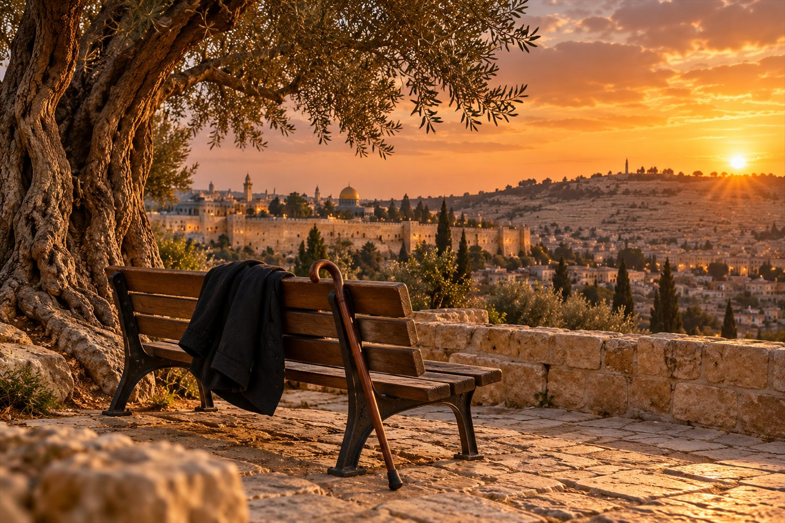
רבי אברהם צבי הלוי בעק נולד בהונגריה בשנת תרפ"ו. בשואה ברח יחד עם אחיו לבודפשט וכך ניצל. לאחר המלחמה עלה לישראל ולמד בישיבת ויז'ניץ. בו' תמוז תשמ"ח עבר להתגורר במלבורן שבאוסטרליה, שם שימש כגאב"ד קהילת עדת ישראל ועמד בראש מערך חינוך, כשרות ונשיא כולל בית יוסף בקהילה במשך שלושים שנה. נלב"ע ה' תמוז תשע"ח.
הרב מרדכי זלמן פיקסלר, יד ימינו ומשמשו של הגאון רבי אברהם צבי הלוי בעק זצ"ל, רבה של מלבורן, סיפר את קורות השבועות האחרונים במחיצת רבו — מהרגע בו גמלה בלבו ההחלטה לעלות לארץ ישראל, לאחר שנודע לו כי ימיו ספורים, ועד הרגע בו עלתה נשמתו השמימה.
"באיסרו חג של שבועות האחרון", סיפר הרב פיקסלר, "הגענו לבדיקה שגרתית בבית החולים במלבורן. הרופא פשט את ידיו כאות צער והפנה אצבעו כלפי שמיא, כאומר: רק הקב"ה יכול לעזור לך עכשיו. הרב הישיש עצם את עיניו לדקה ארוכה, הסתובב אליי ואמר בקול בוטח: 'אין דבר העומד בפני הרצון — תמיד רציתי לעלות לארץ ישראל'... וביקש: 'תשאל את הרופא אם זה אפשרי מבחינה רפואית'. תשובת הרופא היתה: 'אם הרב רוצה לטוס, זה צריך להיות מיידי, מקסימום תוך שבועיים'".
"הרב, כגנרל העומד בפני הקרב, החל לתת פקודות בדעה זכה וצלולה: ראשית ביקש להיפרד מהקהילה, ואז שאזמן מיידית את בני משפחתו. פתח בדברים מרגשים על רצונו העז מימים ימימה לעלות ולהשתכן בארץ ישראל, כפי שמצינו בגמרא על כמה מחז"ל שביקשו לעלות לארץ ישראל ולהסתלק שם. עין לא נותרה יבשה. במוצאי שבת נערך 'מלווה מלכה' רבתי, ובו בירך שוב כל אחד ואחד באופן אישי".
למחרת הגיע יום הפרידה, והמוני בני הקהילה נהרו אל שדה התעופה במלבורן ללוות את רבם. בדרך לארץ ישראל, דרך הונג קונג, חש הרב ברע והובהל לבית חולים, אך לאחר 18 שעות המשיך בדרכו. נחתו בישראל ביום רביעי כ"ג סיון, והמשיכו לבית חתנו בבית שמש. בשבת התחזק וחש בטוב יותר, אך במשך השבוע שוב נחלש.
למחרת החזיר הגרא"צ בעק זצ"ל את נשמתו ליוצרה, כאשר סביב מיטתו כארבעה מניינים של בני משפחתו, תלמידיו ומעריציו — "נשמתו הטהורה יצאה ב'אחד' ממש, במיתת נשיקה כגדולי הצדיקים, בלי צער בגוף ובלי טלטולים וזעזועים". (מתוך "יתד השבוע", ט' תמוז תשע"ח)
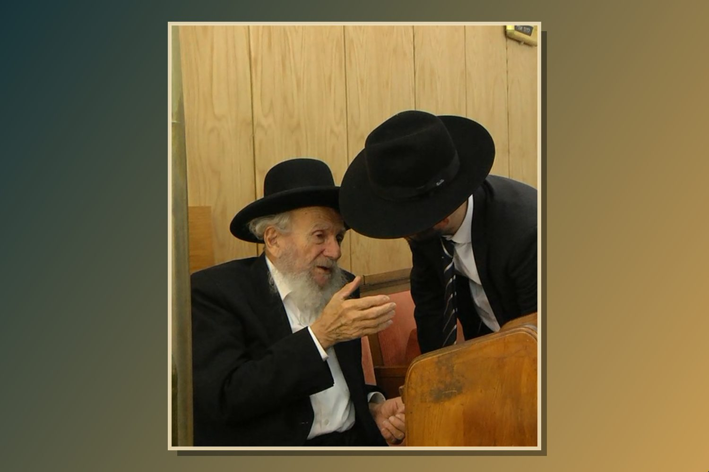
הרב יעקב אדלשטיין נולד בניסן תרפ"ד לאביו רבי צבי יהודה אדלשטיין ברוסיה הקומוניסטית. בשנת תרצ"ד, כשרוב יהודי אירופה עוד לא שמעו את פעמוני האזהרה, הבין אביו שהיעד צריך להיות ארץ ישראל, ולאחר מאמצים גדולים קיבלה המשפחה אשרת יציאה מברית המועצות. בל"ג בעומר תרצ"ד עגנה אונייתם בחופי נמל יפו.
"אני זוכר", סיפר הרב יעקב אדלשטיין, "איך שרנו בשמחה באותו ליל הסדר את המילים 'בימינו בקרוב' בתוך הפיוט 'אדיר הוא יבנה ביתו בקרוב', הייתה תחושה שארץ ישראל זה גן עדן. מרוב שהיה ברור לנו שאנחנו בדרך לגן עדן, אחותי פסיה אפילו שאלה אם בארץ ישראל נפגוש את אמא זכרונה לברכה". בחודש אייר תרצ"ד עלו על סיפון האונייה בנמל אודסה. "הינו כמעט שבועיים באונייה", סיפר הרב, שבועיים של ציפייה נרגשת. נסע איתם יהודי בשם אברומוביץ, שהחביא בתוך חפציו ספר תורה למרות הסכנה מפני השלטון הקומוניסטי, וכשהרגישו הנוסעים שהם מתקרבים לחופי הארץ, פצח בשירה: "בואו כולנו יחדיו נקבל את פני ארץ ישראל".
פעמים רבות עורר האב את תשומת לב ילדיו לכך שהם זוכים לגדול וללמוד בארץ הקודש: "אנחנו נמצאים עם כל הגוף באוויר של ארץ ישראל, בתוך מצווה, כאילו אנחנו בתוך סוכה". בימי החורף, למחרת הגשמים, היה מביט אל השמים הזכים ואומר: "זה האוויר של ארץ ישראל! היכן היה לנו ברוסיה כזה תענוג?" ור' יהודה ענגל מספר: "הרב היה נזהר מאוד שלא לדבר לשון הרע על שום יהודי, אבל הוא הקפיד גם שלא לדבר רע על ארץ ישראל עצמה. הוא לא היה אומר 'כמה חם היום!', כי זאת ארץ הקודש".
מספר בנו הרב חיים: "אני זוכר איך הוא היה מנסה לחבר את האנשים לחלק הרוחני — להגיד תודה להקב"ה, ולהסביר שעדיין לא זכינו שכל הנבואות התקיימו". בדרשתו בה' באייר תשס"ח אמר: "מוטל עלינו לזכור מה קרה כאן לפני שישים שנה, כששבע אומות רצו לבלוע את הכבשה הקטנה, ארץ ישראל... יש הבטחה לעם ישראל, וככל שאנחנו יותר מודים על הניסים ועל החסדים, כך זוכים הלאה לקבל אותם". ועל הדור המיוחד שבו אנו חיים אמר: "אנחנו חיים בתקופה שבה התורה חוזרת לארץ ישראל... אפשר ממש לראות איך מרכז התורה חוזר לכאן". (מתוך "סולם יעקב")
"תקנה דירה אצלכם בעיר"
סיפר אברך שהיה גר בעיר מעורבת: כשהגיע בנו לגיל בית ספר, לא מצא תלמוד תורה מתאים בעיר, ונאלץ לשולחו לעיר החרדית הסמוכה. הוא החליט לעבור לשם, ונסע להתייעץ עם הרב יעקב אדלשטיין. לתדהמתו ענה לו הרב: "אם אתה תעזוב, גם אחרים יעזבו. הקב"ה רוצה ליישב את כל ארץ ישראל, שיגורו חרדים בכל מקום — ולכן לא רק שלא תעזוב את העיר, אלא אדרבה, תקנה דירה אצלכם ותפעל להביא לשם עוד זוגות של בני תורה, עד שהעיר תיהפך למקום תורה". האברך חזר, קנה דירה, והשתדל לשכנע זוגות נוספים — וכעבור כמה שנים הפעולות התחילו לתת פרי, והחלו להגיע זוגות חרדים לעיר.
מאמרותיו: "ריבוי הניסים הוא במיוחד בארץ ישראל, מדי פעם חוליית מחבלים נתפסת לפני שהספיקו לעשות את מה שרצו... כל פעם מגלים דבר אחר, ויש הרבה דברים שעוד לא פרסמו, שאנחנו נמצאים כאן בנס". ("גאון יעקב", גיליון י"ז, תרומה תשע"ה) "אנחנו חיים בארץ ישראל עשרות שנים, ואם פוקחים עיניים, אנחנו ממש צריכים להרגיש שהקב"ה כל כך קרוב, מטייל בינינו... ה' מציל אותנו כל יום ויום". (יתד נאמן, ו' כסלו תשע"ה)
"אספר מה שהייתי נוכח שם בשעת מעשה — שגביר אחד הציע להגאון רבי חיים קניבסקי שליט"א שיבוא לחו"ל למשך שבוע ימים, והבטיח לו מיליון דולר, והשיב הגר"ח: 'אסור לצאת מארץ ישראל'". ("בדידי הוי עובדא", עמ' ס)
במוצאי שבת וישלח תשע"ז נכנס למרן הגר"ח ראש כולל שהיה אמור לטוס למחרת לחו"ל לגיוס כספים, לקבל את ברכתו. כששמע שהוא נוסע לחו"ל, הגיב מיד: "למה לצאת לחוץ לארץ!" ראש הכולל הסביר שהוא בעל חוב לאברכים, אך מרן אמר: "תסע לצפת! לא לחו"ל!" ראש הכולל שמע בקולו וביטל את הטיסה. בצפת, לאחר תפילת ערבית, ניגש ליהודי אמריקאי שפגש שם וסיפר לו את הסיפור — והלה שאל כמה כסף חסר לו, ולמחרת הביא שני צ'קים על כל הסכום, והתחייב לעזור גם בהמשך. כששמע רבינו את הדבר אמר: "מי ששומע ומאמין, ה' עוזר לו". ("דברי שי"ח", גיליון 208, וישב תשע"ז)
נשאל הגר"ח קניבסקי על אדם שרוצה לקנות דירה זולה, שבעליה מוכר אותה במהירות כדי להעביר את הכסף להשקעה בחו"ל — ואמר שהקונה עובר משום לפני עיוור, כי הוא מסייע למוכר לזלזל בחיבת הארץ (על פי דברי ה"חינוך" בעניין קנס בתי ערי חומה). וכן יעץ רבות שכאשר אדם רוצה להחליף דירה, ראוי שיקנה דירה חדשה קודם שימכור את הישנה — "דירה בארץ ישראל לא מוכרים" ונשארים בלעדיה. ולמנהל מוסד שנסע לחו"ל לכנס עשירים לשכנעם לקנות בתים בארץ, אמר הגר"ח: "לומר להם שזו מצווה דאורייתא".
בספר "מתוק האור" מובא ביאור מרבי חיים קניבסקי זצ"ל: מדוע לגבי שדה נאמר באשת חיל "זממה שדה ותקחהו", שהיא קונה ממקום אחר, ואילו לגבי כרם — "מפרי כפיה נטעה כרם", שהיא נוטעת בעצמה? אלא שיש מצווה מיוחדת לטעת עצי מאכל בארץ ישראל, ולכן בכרם השתדלה לעשות זאת בעצמה. הגמרא (בבא בתרא יד, א) מספרת בשבחו של האמורא ר' ינאי, שנטע ארבע מאות כרמים בארץ ישראל — וכי איך הספיק? מסבירה הגמרא, שהיו נותנים לו לטעת רק את חמשת האילנות הראשונים של כל כרם, ובכך נחשב לו כאילו נטע את כולו: מצוות ישוב ארץ ישראל, אף שעיקרה בתוצאה, יש בה גם חשיבות רבה לפעולה עצמה — שהאדם יתחבר לארץ בגופו ממש.
מספר יהודי שבנה בית: בעת הבנייה נעקרו כמה אילנות מחצרו, ומנהל העבודה הציע שהקבלן ישלם לו על עצים חדשים. יהודי בעל לב של חיבת הארץ תמה עליו: "לתת לגוי לקיים את המצווה במקומך?! עד שיש לך הזדמנות של פעם בחיים לטעת עצי מאכל בגינה שלך בארץ ישראל, אתה חושב לתת מצווה כה יקרה לגוי?!" הוא נגש ולמד את הסוגיה, ולאחר מכן, יחד עם כל בני משפחתו, גברים נשים וטף, קיים את המצווה בדחילו ורחימו — מעמד מרגש מאוד שכל המשפחה זוכרת עד היום. כשלימים שאל אותו מנהל העבודה אם ביקש מהקבלן את דמי העצים, השיב: "וכי אני מוכר את המצווה שלי?!" ולבסוף, כשנגמר הבניין, תרם לו הקבלן עצמו — מרצונו — פי עשרה מעלות העצים.
על רבי יוסף חיים זוננפלד מסופר, שכשנוסדה בקיץ תרפ"ה המושבה "מחנה ישראל" ונסע לחנוך בה רבנות, עיניו הבריקו למראה יהודים חרדים החורשים את אדמת הקודש באת ובמעדר. הוא ניגש לאחד החורשים, הוציא מידיו את המחרישה וניהל בעצמו את צמד הבקר. וכן מסופר על האדמו"ר מסערט ויז'ניץ, שבדרכו לביתו היה עובר ליד עץ קטן הנתמך במקל, ואם המקל זז — היה מיישרו, באומרו למשמשיו הנפלאים: "הריני מקיים בזה מצוות ישוב ארץ ישראל".
סיפר הרב יצחק זילברשטיין שליט"א: בעת שהותנו בשווייץ, אירחנו את הגר"מ שולמן זצ"ל, ראש ישיבת סלבודקה. יצאתי עמו לטייל והשחתי בפניו על האוויר הטוב שבשווייץ — והוא הזכיר דווקא את "אווירא דארץ ישראל המחכים". רעייתי ששמעה זאת אמרה: "ברגע זה אני חוזרת לארץ הקודש". "אני אישית", הוסיף הרב זילברשטיין, "כל מה שאני חי הוא בזכות אימי ע"ה, שהחליטה לפתע לעזוב את מקומה בחו"ל ולעלות לארץ ישראל — עלייה שהצילה את חיינו מהנאצים".
"מזגנא דרבי אמי ורבי אסי"
פעם הגיע הרב זילברשטיין לביתו של תלמיד חכם וראה על המזגן שלט "מזגנא דרבי אמי ורבי אסי"...?! לתמיהתו הסביר בעל הבית: בגמרא (כתובות קיב, ב) מסופר שרבי אמי ורבי אסי בטבריה היו עוברים מהחמה לצל ומהצל לחמה כדי להנעים לעצמם את הישיבה בארץ ישראל, ובכדי שלא יוציאו לעז חלילה עליה. "אני סובל מהחום בקיץ, וקניתי את המזגן במחשבה זו, שלא להוציא לעז על הארץ הקדושה". (עלינו לשבח, בראשית, עמ' תל)
מספר הרב יוסף אליהו: שאלתי את מורי ורבי הרב אביגדור נבנצל שליט"א אם מותר למישהו לצאת מהארץ לעניין מסוים. הרב ענה על השאלה, ואז הוסיף: "אבל גם אם מותר, למה לרצות להיות דומה 'כמי שאין לו אלוה'?" והוסיף וסיפר: "כשהייתי טס ללמד תורה בסיני, בהלוך הייתי משתדל לשבת בסוף המטוס, ובחזרה ארצה השתדלתי לשבת בשורה הראשונה" — כדי להרוויח עוד רגע בארץ ישראל, ולחזור אליה כמה שיותר מהר.
מעשה ונסע הרב נבנצל לישוב בית א-ל לחנוכת בית של תלמידו, ולאחר הסעודה הזמין בעל הבית את הנוכחים לטעת עץ בחצר. הרב נטע שתיל, ולאחר מכן הידקו כל הנוטעים את האדמה סביב העץ ברגליהם — אך הרב עצר את עצמו, התכופף עד לקרקע והחל להדק את האדמה בשתי ידיו. תלמידו לא הבין: "הרב, מדוע הרב מתכופף ומתאמץ כך, ולא מהדק עם הרגל?" ענה לו הרב בשקט: "להדק ברגל, הרי זה ביזיון המצווה"...
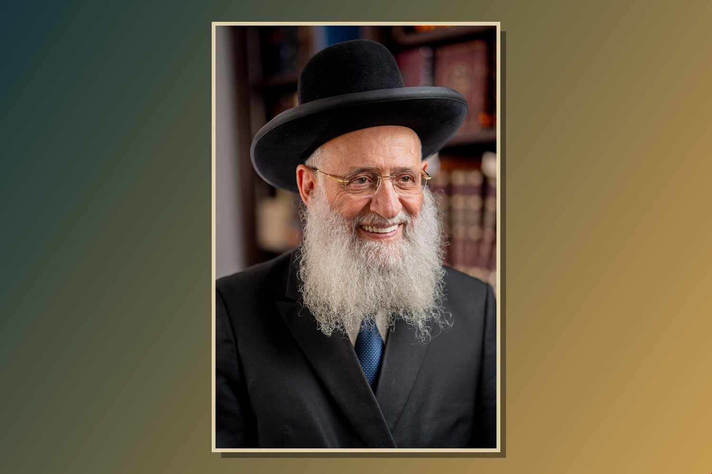
ידוע מה שאמר רבי יהודה הלוי: "יפה נוף משוש תבל קריה למלך רב, לך נכספה נפשי מפאתי מערב... וטעם רגביך לפי מדבש יערב" — טעם הבוץ של ירושלים עיר הקודש, ערב לי מדבש!
זכורני, מספר הרב ראובן אלבז שליט"א: בהיותי ילד, היו מגיעים לביתנו חכמים מארץ ישראל לעשות מגביות, ואמי מתפעלת ואומרת: "זה שליח מארץ ישראל!" הייתי ילד קטן, ואני זוכר את עצמי לוקח את הבוץ שהיה דבוק בנעליים שלהם, ואומר לעצמי: "זה ודאי של ארץ ישראל"... הייתי לוקח ושם אותו בתוך המרק שלי ואוכל... אי, ארץ ישראל! זכיתי לאכול את ארץ ישראל!
אני אף זוכר את ההתרגשות הגדולה שאחזה בנו כשהגענו לארץ ישראל. הייתי רק בן אחת עשרה כשהגענו ארצה. כשירדנו מן האונייה בנמל חיפה, השתטחנו על האדמה והתחלנו לבכות. לא אשכח זאת... (מהספר "משכני אחריך")
כך גם סיפר אחד מעולי מרוקו: זכורני מילדותי שהיו באים שדרי"ם מארץ ישראל לגבות כספים עבור תלמידי חכמים השוקדים על תלמודם, ופעמים רבות היו מתארחים בבית הורי. כשהיו מגיעים היתה שוררת בבית שמחה מיוחדת — "הגיע אורח מארץ ישראל, מארץ הקודש שכולנו כל כך חושקים להגיע אליה" — ואני ואחיי היינו מבקשים רשות לגרד את העפר הדבוק בנעליהם ולשים אותו בצלחת המרק, ושותים בשמחה מעפרה של ארץ ישראל.
סיפר הרב שלמה שטנצל זצ"ל, שבעת שעדיין היה מסך הברזל על רוסיה פגש עולה חדש נפעם מאוד. הלה סיפר שהיה כלוא במחנה בסיביר, וכשהתברר שהוא משתחרר ושאושרה עלייתו לארץ הקודש, ביקשה ממנו רופאה במחנה, גב' שפירא, שיכנס למרפאה לפני עוזבו. שם הגישה לו צנצנת עם אצבע חתוכה, ואמרה: "ככל הנראה אני לא אזכה לעלות לארץ ישראל, אולם עז רצוני להיקבר בה. חתכתי לי אצבע — בקשתי שכשתגיע לארץ ישראל, תקבור אותה בהר הזיתים שבירושלים, כדי שלכל הפחות אבר ממני יהא קבור בארץ ישראל". אותו עולה חדש היה נפעם ונרגש, כי כעת הוא שב מקיום הבקשה.
כל ימיו התגעגע כ"ק האדמו"ר מפיטסבורג זצ"ל (בעל ה'אמונת אברהם') לעלות לארץ הקודש: "כמה דמעות שפכתי כבר לפני הבורא ית"ש, שלא אהיה אני ובני ביתי מגורשים חלילה מלהסתופף בנחלת השי"ת". וכשזכה לעלות, בהגיעו לראשונה לאחת הערים ברכב מקורבו, ביקש לעצור: "לבי עולה על גדותיו, מוכרח אני לצאת במחול מרוב שמחה!" עצר הנהג בצידי הדרך, והאדמו"ר יצא עמו במחול תחת כיפת השמים. והיה נוהג, שכל אימת שיצא מהארץ לחו"ל, בהגיעו לכבש המטוס היה משתטח מלוא קומתו ארצה, מתרפק על אדמת הקודש ומנשקה, ונפרד ממנה בדמעות שליש — וכך היה שב ועושה גם בחזרו ארצה.
סיפר ר' מנחם מנדל השוחט: כשעלה סבי, ר' שלמה זלמן משקלוב, לירושלים, יצאו סבא וסבתא וילדיהם רכובים על חמורים, ובדרך הגיעו לשדה נטוע אילנות מיוחדים, שהתברר שהם עצי זית — ממין שבעת המינים שנשתבחה בהם ארץ ישראל. סבא בירך ברכת העץ ושהחיינו ואכל, ונתן גם לילדים. הזיתים היו מרים, והילדים החלו לבכות: "וי לנו, טעם מר אנו חשים בפינו!" השתיקם סבא בתקיפות: "הסו, אלה הם פירות ארץ ישראל, וחלילה לנו להוציא עליהם דיבה ולומר כי מרים הם". כך צריכים לאהוב את ארץ ישראל ואת פירותיה — זוהי אהבת ארץ ישראל.
מעשה ברבי יעקב שמשון שפירא משפיטבקה, שעלה לארץ ישראל בשנת תקנ"ד וחזר לעירו כדי להעלות את בני משפחתו. משהגיע היה גופו רזה וכחוש מהתלאות, והחליט להתעכב באכסניה כמה ימים לנוח ולאכול, עד שחש עצמו בריא. תמהו עליו החסידים מדוע אינו ממהר לביתו הקרוב, והשיב: "אילו שבתי כשגופי רזה ופני נפולות, היו אומרים: ראו מה עלה לרבנו ששהה בארץ ישראל! ונמצאתי גורם, שלא במתכוון, להוצאת לעז על הארץ הקדושה. אולם עכשיו, כשאני חוזר ומראה פנים טובות, יאמרו: ראו כמה טובה השפעת ארץ ישראל". (פרפראות לתורה, עמ' 111)
היהודי ההונגרי הראשון שנקבר בהר הזיתים היה עשיר מפרשבורג שירד מנכסיו ונשאר עם חוב גדול. כל שנותר לו היה סכום שהספיק לשלוש אגרות הגרלה ממשלתיות. חישב שאם יזכה בשלושת הפרסים הגדולים, יספיק הדבר לפרוע חובותיו ולהוצאות נסיעתו לארץ ישראל — ונדר שאם יזכה, יעלה עם משפחתו. ביום ההגרלה הלך מתוך ביטחון בה', וללא כל סימני התרגשות זכה בשלושת האגרות בזו אחר זו. לא איחר לקיים את נדרו: פרע את חובותיו ועלה לירושלים. (האיש על החומה, ב, עמ' 107)